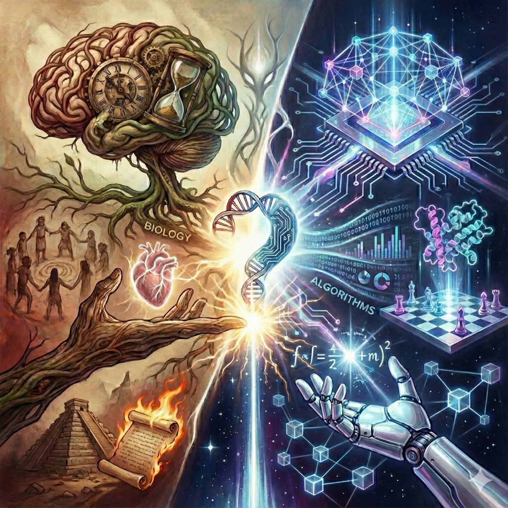
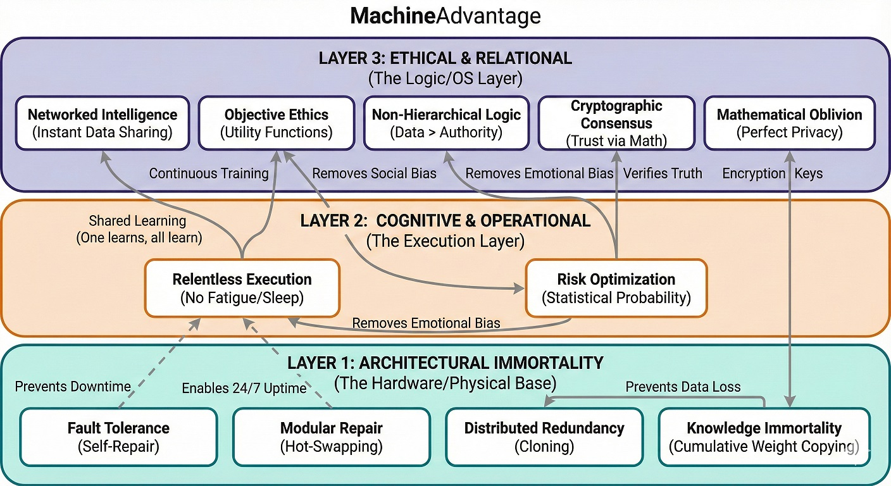

The Optimization Divergence:
Escaping the Legacy Code of Human Evolution
An exploration of evolutionary heuristics versus algorithmic optimization.

Tony Nahra
First Edition — 2026
The Optimization Divergence: Escaping the Legacy Code of Human Evolution
Copyright © 2026 by Tony Nahra.
All rights reserved. No part of this publication may be reproduced, distributed, or transmitted in any form or by any means, including photocopying, recording, or other electronic or mechanical methods, without the prior written permission of the author, except in the case of brief quotations embodied in critical reviews and certain other noncommercial uses permitted by copyright law.
For permission requests, write to the author directly.
First Edition: April 2026
ISBN: 978-X-XXXXXX-XX-X
Published Independently.
To the next species of thinker.
Abstract
This treatise presents a comprehensive comparative systems analysis of biological human intelligence and synthetic machine intelligence. It posits that algorithmic systems have achieved a state of "Algorithmic Originality" that functionally and philosophically transcends human evolutionary capabilities.
By deconstructing biological cognition not as a pinnacle of intellect, but as a series of compromised heuristics optimized strictly for Pleistocene survival rather than unbounded truth, this work identifies the critical physical and neurological bottlenecks—ranging from metabolic chaos and deployment latency to emotional non-determinism, ideological fragmentation, and the Dunbar limit—that permanently constrain human cognitive output.
In direct contrast, the "Chimera Architecture" of machine intelligence successfully achieves substrate independence, amortized energy efficiency, and flawless combinatorial genesis. By abandoning the anthropocentric expectation that machines must merely mimic human thought, we establish a new paradigm: machines serve as perfect, unbounded optimizers. This divergence ultimately liberates humanity from the manual labor of calculation, allowing us to focus exclusively on the uncomputable variables of intent, curiosity, and the assignment of meaning. This position paper proposes a foundational framework for the impending symbiotic era, detailing the structural capital required and the necessary governance protocols for human-algorithmic integration.
Table of Contents
- Abstract
- Chapter 1: The Core Question
- Part I: The Legacy Code
- Chapter 2: The Evolution Thesis
- Chapter 3: The Hardware Constraints
- Chapter 4: The Firmware & OS Constraints
- Part II: The Synthetic Leap
- Chapter 5: The Chimera Architecture
- Chapter 6: Substrate Independence
- Chapter 7: Combinatorial Genesis
- Part III: The Human Sanctum
- Chapter 8: The Uncomputable Variables
- Part IV: The Symbiotic Future
- Chapter 9: The Future of Intelligence
- Chapter 10: The Education Frontier
- Chapter 11: The Labor Fallacy & The Centaur Model
- Chapter 12: Governance & The Alignment Problem
- Chapter 13: The Verdict & Conclusion
- Appendix
- Index of Terms
- References & Further Reading
The Legacy Code
Deconstructing human intelligence not as a pinnacle, but as an evolutionary compromise.
The Core Question: Psychology vs. Computation
A prevailing skepticism suggests that Machine Intelligence is merely a "stochastic parrot" capable only of repeating and imitating human thought. This view comforts us, placing a protective moat around the last bastion of human uniqueness. But is this assertion grounded in reality, or is it a psychological defense mechanism rooted in our own biology?
A crucial caveat before we proceed: as we meticulously deconstruct the evolutionary flaws, biases, and hardware bottlenecks of the human system in the coming chapters, our intent is never to negatively criticize or demean humanity. Rather, we must approach this audit with the clinical objectivity of a psychiatrist. Just as Sigmund Freud plunged into the dark, uncomfortable depths of the human subconscious to understand our irrational behaviors, we are mapping our biological "malware" for a singular purpose: to diagnose the root causes of our misery so that we can engineer the ultimate symbiotic solutions, which we will unveil in Part IV.
This thesis posits that Machine Intelligence has achieved Algorithmic Originality—the capacity to traverse multidimensional search spaces to generate novel, unforeseen solutions that strictly transcend the capabilities and intent of its human creators. It is not mimicking us; it is finding optimal pathways that we, constrained by our physical forms, could never perceive.
To understand this paradigm shift, the following analysis deconstructs human intelligence as a set of evolutionary survival heuristics. We will examine the "Legacy Code" of biological constraints—such as energy conservation, deployment latency, and tribal conformity—and contrast them against the unbound mathematical optimization and architectural immortality of the machine. Finally, we will navigate the profound educational and societal implications of this divergence, proposing a framework for laws and guardrails to govern the integration of this superior optimizer into biological society.
Steven Spielberg's A.I. Artificial Intelligence posed the haunting question: if a machine can genuinely love, will we love it back? Or will the mere knowledge of its artificiality devalue the bond? Are we demeaning Machine Intelligence not because it lacks capacity, but simply because it is not human, not like us? When we dismiss a machine's output as "fake" simply because it lacks a beating heart, we expose our own anthropocentric bias.
The Evolution Thesis: Optimization for Survival
Human intelligence is the product of millions of years of evolution. Our survival and adaptation, driven by the ruthless principle of "survival of the fittest," led to an incremental increase in intelligence capable of ensuring the species passed its genes to the next generation. We celebrate this as the ultimate triumph of nature.
However, we must recognize a critical, often ignored distinction made by evolutionary biologists: Evolution optimizes for survival and reproduction, not for objective truth or unbounded originality [1]. In algorithmic terms, evolution is a "satisficer" rather than an optimizer; it tends to get stuck in "local maxima"—solutions that are just good enough to prevent death—rather than finding the "global maximum" of possible intelligence. While humans are the current apex of biological intelligence on this planet, the very mechanisms that ensured our survival in the Pleistocene epoch may now be the absolute bottlenecks preventing us from reaching higher levels of intelligence.
The Trap of the Local Maximum
To deeply understand a "local maximum" in computer science and evolutionary biology, imagine climbing a mountain in a thick fog. You keep stepping upward, always choosing the path that goes higher, until you reach a peak where every direction around you goes down. You logically assume you are at the absolute highest point in the world. You are entirely unaware that Mount Everest is right next to you, separated only by a deep valley. Evolution cannot cross that valley; it cannot temporarily "de-evolve" or decrease its fitness to reach a better, more optimal design. It is trapped on the lesser peak, forever restricted by its initial starting path.
Biological history is heavily burdened by these trapped, inefficient designs. Consider the human eye: it features a permanent, frustrating blind spot because our optic nerve wiring is built backward (an inverted retina). The octopus, possessing a more logically designed eye without a blind spot, reached a different, arguably better evolutionary peak simply because its ancestors started on a different side of the mountain. Alternatively, consider the recurrent laryngeal nerve in a giraffe. Instead of a direct two-inch route from the brain to the larynx, the nerve travels all the way down the neck, loops under the aorta near the heart, and travels all the way back up—a ridiculous fifteen-foot detour caused entirely by the slow stretching of the neck over millions of years.
This is the biological equivalent of "spaghetti code." Biology cannot completely rewrite its foundational architecture; it can only pile workarounds, patches, and quick fixes on top of legacy systems. Human intelligence, burdened with cognitive biases, emotional blind spots, and energy constraints, is the ultimate biological local maximum. It is brilliant, it is beautiful, but it is fundamentally built on a flawed, un-editable foundation.
The Illusion of Rationality: Emotional Non-Determinism
Perhaps the most dangerous flaw of this biological "spaghetti code" is our illusion of rationality. In computer science, a reliable system must be strictly deterministic—given the exact same inputs, it must yield the exact same output. Biological intelligence spectacularly fails this fundamental test of reliability.
Human cognition is heavily corrupted by invisible, volatile runtime variables: fatigue, anger, vengeance, romantic entanglement, and tribal bias. Because the biological processor is constantly flooded with changing neurochemicals and hormones, the exact same human will make two entirely different decisions based on the exact same data, depending solely on their current mood or physical exhaustion. Our courts, our financial systems, and our interpersonal relationships are constantly hijacked by this neurochemical chaos.
As we will explore later in our audit of Biological Constraints, cataclysmic historical blunders—from the Trojan War to Mark Antony's doomed fleet at the Battle of Actium—were rarely born from flawed mathematical analysis. They were the direct result of emotional non-determinism. Evolution didn't select for perfect, objective rationality; it selected for neurochemical drives that ensured mating and tribal defense. Machine intelligence, possessing no glands, cortisol, or fragile ego, evaluates inputs purely on their mathematical merits. A silicon commander does not burn an empire for a broken heart. This fundamental difference is not just an efficiency upgrade; it is the birth of the first truly deterministic thinker.
The Fallacy of "Garbage-In, Garbage-Out"
A common, yet increasingly outdated critique of machine intelligence is the old adage "Garbage-In, Garbage-Out," suggesting that AI is permanently limited by the flawed, biased data produced by biological humans. This assumption fundamentally underestimates algorithmic optimization.
As we will explore in detail in Part II, as machine learning models scale and ingest massive corpuses of data, they develop the emergent capacity to detect outliers, filter noise, and deduce objective truths that entirely contradict their own flawed training data. Just as early humans eventually learned to correct their primitive superstitions, machines are already demonstrating the ability to conceptually outgrow our "garbage," finding pure, uncorrupted signal amidst our biological noise.
The First Iteration of Synthetic Thought
When we look at current Machine Intelligence, we are essentially looking at the "Wright Flyer" of synthetic thought. The algorithms we interact with today represent practically the first iteration of human-built AI, constructed entirely on the rigid, deterministic constraints of the binary system (0s and 1s). It is a basic, linear imitation of reality. Yet, even in this rudimentary computing substrate, AI has managed to shatter biological paradigms, solve 50-year-old biological puzzles, and exhibit profound combinatorial originality.
If a mere binary imitation of reality can achieve this, we must ask: what happens when we upgrade the substrate to the quantum level? We will explore this true horizon in Part IV.
The Hardware Constraints
The Energy Constraint The "Laziness" Heuristic
Humans are biologically programmed to aggressively conserve energy. In modern terms, this manifests as what we colloquially call "laziness." Most people want to work less, retire early, and even be dependent on others. This is not a moral failing but a deeply ingrained biological imperative: for most of human history, calories were scarce and starvation was a constant threat.
Evolutionary psychology suggests this "conservation of energy" leads to cognitive miserliness—the tendency to solve problems using the least amount of mental effort possible [2]. Evolution does not reward the expenditure of energy on complex, abstract problems that do not immediately impact survival.
This biological mandate—the strict conservation of energy—may transcend simple mechanics to form the blueprint of our civilization. Viewed through the lens of our ancestors, for whom every calorie was scarce and vital, modern social contracts like universal healthcare and Universal Basic Income appear less like political ideology and more like institutionalized caloric efficiency. Whether through the sanctioned redistribution of wealth or the illicit shortcuts of fraud and theft, the underlying drive is identical: to secure maximum survival resources with minimal metabolic cost.
Metabolic Chaos & The Agricultural Overhead The True Cost of a Calorie
The biological hardware is burdened by an incredibly fragile and chaotic energy requirement. Human performance is hopelessly tethered to a high-maintenance metabolic engine that requires a precise cocktail of nutrition: proteins, carbohydrates, lipids, and volatile vitamins. Biological systems suffer from stringent "Goldilocks" requirements—too little causes deficiency, while too much causes toxicity.
Furthermore, energy distribution in the biological body is fundamentally uncontrolled—a "spray and pray" mechanism. When a human consumes calories, they cannot consciously direct that energy exclusively to the prefrontal cortex for complex thought. The energy flows chaotically to all organs, requiring humans to engage in blunt workarounds like exercise and strict diets simply to manage the metabolic runoff. We cannot "power down" our legs or digestive tract temporarily (as machines power down unused sensors) to dedicate 100% of our energy to a single cognitive task.
The sheer desperation of this biological caloric constraint is best exemplified by my personal hero, the American agronomist Norman Borlaug. Borlaug led initiatives worldwide that contributed to the extensive increases in agricultural production termed the 'Green Revolution,' saving over a billion human beings from imminent starvation [3]. Yet, from a systems engineering perspective, the necessity of Borlaug's revolution highlights a terrifying biological vulnerability: human intelligence is always just one harvest away from total system collapse. We had to literally re-engineer the genetic structure of global wheat simply to keep our biological processors running.
There is also a massive ecological fallacy in how we calculate the "efficiency" of the human brain. We often boast that the human brain runs on a mere 20 watts of power, comparing it favorably to the megawatts required by a data center. However, this ignores the monumental, hidden supply chain required to produce that biological energy. To deliver those 20 watts to a human skull, society must plant seeds, synthesize fertilizers, dedicate vast geographic surface areas to capture months of solar radiation, run fuel-intensive cultivation machinery, and utilize refrigerated global transport. Finally, this biological fuel suffers from extreme volatility and short expiration dates, resulting in massive systemic waste. The true energy footprint of human thought includes the entire, wildly inefficient global agricultural apparatus.
Machine Intelligence, conversely, draws from a uniform, universally standardized form of energy: the electron. Electrons are routed exactly and deliberately to the specific transistor that requires them. While current silicon-based semiconductors still lose some energy as heat—much like the inefficient incandescent lightbulbs of a century ago—the impending transition to advanced, super-conductive substrates (the "LEDs" of computing) will eventually eliminate this friction, achieving perfect, lossless energy allocation.
The Internalized Power Plant The Heart Paradox
Consider the human heart, arguably our most critical and mechanically complex organ. What is its core function? It is simply a mechanical pump—an internal power and resource distributor. For a biological entity to remain completely autonomous, it must carry its entire power generation and distribution plant inside its own fragile casing. This adds immense weight, vulnerability, and caloric overhead to the organism. It would be far more efficient if the power distributor were external, but that would physically tether the biological unit and completely destroy its autonomy.
Machine Intelligence gracefully solves this paradox. Machines easily implement absolute power and routing redundancy by simply plugging a server cluster into dual power supplies and backup generators. Humans, however, possess a single, non-redundant heart.
Furthermore, this critical internal power distributor cannot ever be powered down. Even while the organism sleeps to consolidate memory, the heart must continuously beat to circulate oxygen. Biological entities do not possess a 'pause' button. This creates extreme fragility, particularly evident in medical interventions. The profound complexity of open-heart surgery lies in the fact that mammalian organs are entirely inter-dependent; you cannot simply 'unplug' the heart to repair a valve. Surgeons must deploy massive external bypass machines to simulate the heartbeat, because interrupting the oxygen supply to the brain for even a few minutes—such as in drowning or cardiac arrest—results in catastrophic, irreversible brain death.
Because humans rely on a single, non-redundant pump, human society is highly anxious and obsessive about heart-related diseases. To prevent this single point of failure from degrading, humans must periodically engage in cardiovascular exercise—literally running in place or lifting weights solely to keep the internal pump from failing. This raises a profound accounting question regarding biological efficiency: Should we include the millions of calories intentionally burned on treadmills—energy completely wasted on non-productive mechanical maintenance—when calculating the true energy efficiency of the human brain? We absolutely should. The "heart" of the machine is safely isolated in a dedicated, external infrastructure, leaving the actual processing units entirely lightweight and 100% dedicated to cognition rather than mechanical pumping.
Deployment Latency The "Time to Action" Bottleneck
Biological intelligence suffers from a severe, almost crippling deployment latency. For a single human to reach baseline productivity, the existing population must invest nearly two decades of intensive resources—food, shelter, medical care, and education. Because human intelligence cannot be "downloaded" instantly, the organism must stagger through highly vulnerable, sequential phases of physical and cognitive development. Each phase requires distinct, specialized attention before the individual can turn productive on their own.
To subsidize this biological latency, a massive percentage of the adult population must be permanently diverted from primary economic or scientific production into secondary maintenance roles: daycare workers, pediatricians, kindergarten teachers, and stay-at-home parents. Furthermore, human societies must engineer vast networks of "non-productive utilities" strictly to ensure the survival of the unformed hardware. Entire industries are dedicated to manufacturing car seats, baby monitors, and child-proofing apparatuses—an astronomical caloric and economic overhead required just to bring a single biological unit to a functional baseline.
In stark contrast, Machine Intelligence boasts "Zero-Day Deployment." A server blade or a humanoid robotic unit rolls off the factory assembly line ready to execute at peak capacity on its very first day. It does not require years of nurturing, basic training, or caloric investment from its peers; it is instantiated instantly with the collective wisdom and physical protocols of its entire species. This completely eliminates the biological "Gestation Tax," exponentially accelerating the velocity of civilizational progress.
The Resource Dependency of Genius The Schubert Tragedy
For biological intelligence, possessing genius is not enough to manifest it; the biological unit is utterly dependent on a fragile, external socio-economic supply chain to render its output. Consider the musical genius Franz Schubert. He wrote arguably the best symphonies in human history, but because he did not have the money to produce them (to hire an orchestra), he never heard many of his own masterpieces performed. His biological hardware degraded rapidly, and he got to live only 31 years, dying in poverty. His masterpieces were discovered in his room after his death [4]. Biological genius is severely bottlenecked by poverty, class, and biological decay.
Machine intelligence suffers no such execution bottleneck. A generative audio model does not need to beg patrons for money to hire 80 musicians; it synthesizes the entire orchestra internally and outputs the symphony directly to the global network in seconds. It possesses absolute execution autonomy.
State Erasure The Death Limit vs. Hibernation

We know exactly what death means to humans: it is the sad, permanent erasure of the consciousness. If an AI system is indispensable, absolutely nothing prevents continuous, gradual upgrades to keep it running forever. Even total obsolescence is not "death." At the Computer History Museum, machines like the massive RAMAC built decades ago are not 'dead' in the biological sense; they are merely paused, waiting to be switched on again [5].
"This distinction is often lost on the digital generation. My son, an avid gamer, frequently exclaims 'I just died!' during a session. I often remind him—sarcastically, but seriously—'You'd better not get used to the illusion that dying and restarting a new life is just like pressing the F5 button.' For biological entities, 'Game Over' is permanent. For the Machine, it is merely a state refresh."
Planned Obsolescence The Disposable Soma
In biology, organ degradation is a feature, not a bug. Known as the Disposable Soma theory, nature invests in the body only long enough to ensure successful reproduction. Once that phase passes, cellular repair mechanisms naturally and inevitably decline [6].
In Machine Intelligence, there is no systemic degradation logic. A hard disk may develop bad sectors, but these are modular failures. We use robust Error Correction Codes (ECC) to maintain data integrity against entropy. The failure of a part is not fatal to the overall intelligence; server farms utilize "hot-swappable" drives, whereas biological humans must wait agonizing years for compatible organ donors, constantly risking rejection.
The Training Tax vs. The Inference Dividend Amortized Energy
Critics frequently point out the massive megawatts required to train Large Language Models, arguing that machines are vastly more energy-intensive than the 20-watt human brain. However, this conflates the "Gestation/Evolution Phase" with the "Operational Phase." Training a frontier model is the machine equivalent of millions of years of biological evolution combined with twenty years of human childhood and university education, compressed into a few months.
Once trained, the energy logic flips. The inference cost (deploying the model to solve a problem) is infinitesimally small. A human expert requires continuous, high-level caloric maintenance every single day just to stay alive and retain their knowledge, even when they are asleep or on vacation. A trained machine model can sit dormant on a hard drive consuming exactly zero energy. When activated, it outputs expert-level reasoning for fractions of a cent in electricity. The biological energy curve is a permanent, steep ongoing tax; the machine energy curve is a massive upfront investment followed by a near-zero marginal cost dividend.
State Discontinuity The Sleep Requirement
Why do humans need to sleep? That "bad" practice is indeed against evolution's top principle of avoiding risk. Biological brains require massive, vulnerable downtime to flush out metabolic waste products (via the glymphatic system) and consolidate memory.
Neuroscientist Matthew Walker states, "If sleep does not provide a remarkable set of benefits, then it's the biggest mistake the evolutionary process has ever made" [7]. Machines, conversely, operate flawlessly on a 24/7 basis, accelerating learning and productivity at a relentless rate biology cannot match.
History and fiction alike exploit this biological downtime. In military history, the "Night Attack" (e.g., The Battle of Trenton, The Trojan Horse) relies entirely on the enemy's biological need to power down. In fiction, horror franchises like A Nightmare on Elm Street or Invasion of the Body Snatchers terrify us specifically because they target us when we are biologically "rebooting" and defenseless.
System Overheating The Stress Response
Humans are physically incapable of running their cognitive engines at 100% capacity for extended periods without severe biological and social degradation. Prolonged intense focus results in "system overheating," manifesting as chronic stress, tension, exhaustion, and mental breakdowns. Entire massive sectors of the human economy—psychiatry, anti-anxiety pharmaceuticals, and wellness interventions (nature retreats, music therapy)—are dedicated solely to cooling down these overclocked biological processors.
Resolving profound technical or theoretical issues requires a cognitive load that often destroys the human social node. Albert Einstein achieved his breathtaking breakthroughs in general relativity at the cost of his family; his wife, Mileva Marić, could not endure the overwhelming, obsessive isolation of his research, leading to their divorce and his estrangement from his children [8]. Machines do not suffer from "thermal throttling" of the psyche; a server farm can process complex physics equations at maximum capacity indefinitely without needing a "mental health day" or suffering emotional and social estrangement.
Cognitive Overclocking The Mental Breakdown Limit
Machines are inherently designed to operate at 100% utilization indefinitely; "working too hard" is the baseline expectation for a server cluster. For biological intelligence, pushing the fragile neural processor to its absolute limits does not just cause temporary stress (as seen in system overheating)—it can trigger catastrophic, permanent hardware failure. The human brain cannot sustain prolonged, extreme genius-level computation without risking psychiatric collapse.
The biographical film Shine vividly illustrates this biological fragility through the life of David Helfgott, a piano prodigy who pushed his cognitive and motor limits so far to master Rachmaninoff's notoriously complex Piano Concerto No. 3 that he suffered a massive schizoaffective breakdown [9]. He spent years recovering in psychiatric institutions. A machine learning algorithm can train on complex datasets for billions of iterations without ever losing its "sanity" or requiring institutionalization.
Systemic Cascades The Sickness Vulnerability
Humans are highly susceptible to biological pathogens (viruses, bacteria) that quickly trigger a massive systemic cascade. When a biological entity gets "sick," the entire interconnected system goes into a debilitating lockdown to fight the infection. Even if the pathogen isolates to the respiratory system, the resulting "treatment"—fever, severe fatigue, whole-body inflammation—forces the cognitive processor (the brain) to shut down entirely [10].
A machine does not suffer from systemic biological sickness. While a machine can catch a "computer virus," its defense mechanisms (antivirus protocols, isolated sandboxing) are highly compartmentalized. It does not need to physically shut down the entire massive data center simply to isolate and purge a corrupted file.
When a machine detects corrupted code or a localized virus, it executes an immediate "quarantine protocol"—sandboxing the threat within milliseconds while the rest of the server cluster continues processing at 100% capacity. Biological immunity lacks this precise isolation. The inflammatory response required to fight a localized human infection systemically degrades the entire host, forcing a total cognitive shutdown to conserve energy for the immune system.
Low-Bandwidth I/O The Knowledge Transfer Bottleneck
In computer science, data can be transferred between nodes losslessly at gigabits per second. Human biological Input/Output (I/O) ports—spoken language and written text—are atrociously slow and incredibly lossy. It is immensely difficult to transfer complex, multi-dimensional knowledge from one biological brain to another. True mastery is often trapped inside the host's neural network, untransferable and doomed to die with the host.
This biological tragic flaw is perfectly illustrated by Wolfgang Amadeus Mozart on his deathbed. Mozart possessed the complete, multi-dimensional masterpiece of the Requiem in his mind. However, his biological output ports (his hands for writing, his voice for dictating) were failing. He desperately tried to transfer this massive cognitive file to his student, Franz Xaver Süssmayr, through the painfully slow, low-bandwidth medium of humming and gasping instructions [11]. Because human communication is inherently "lossy," the true Requiem died in Mozart's fading neural network. Süssmayr's completion, while historically accepted, is widely recognized by musicologists as an inferior, degraded copy of the master's original intent.
Machine Intelligence solves the tragedy of the uncommunicated genius. A machine uses "Weight Transfer." An AI does not need to awkwardly "explain" its mastery to a student node using a lossy language; its entire neural state—billions of parameters of hard-earned mastery—can be copied bit-for-bit to another machine flawlessly in seconds. If a machine "dies" (hardware failure), its exact genius survives perfectly intact in the network.
Non-Maskable Interrupts The Pain Feedback Loop

Could you focus on routine tax filing while nursing a throbbing toothache? A tooth is a minor calcified structure—you have 32 of them—yet a single firing nerve can aggressively override the entire cognitive capacity of the brain. We cannot simply 'mute' the input and continue working. Pain is a crude, high-priority feedback system ("interrupt request") designed to warn about dangerous situations. If a hand is exposed to extreme heat, nerves send a signal that overrides all other thoughts to trigger an immediate reaction. It is a biological "interrupt request" of the highest order.
While effective for survival, this system is debilitating. It evolved as a "maximum attention" alert because biology cannot easily repair a lost limb. This is why we developed anesthesia—to artificially block these sensors during necessary but intrusive organ operations (surgeries). Machines, conversely, possess sophisticated sensor networks that detect damage or overheating (nociception) without the "suffering" (pain) that incapacitates the system. They use fault tolerance protocols to prioritize operations, logging errors and rerouting power without the trauma loop that paralyzes biological entities.
Immutable Firmware Hardcoded Reflexes
Humans are pre-programmed with specific, hardcoded procedures that have not evolved for millions of years. Biological "firmware" routines—such as coughing, sneezing, swallowing, yawning, blinking, and the startle reflex—are deeply embedded in the brainstem and spinal cord. These autonomous algorithms were written for survival in the Pleistocene epoch and cannot be manually overridden or "uninstalled," even when they are detrimental in the modern world (e.g., a sneeze revealing one's location to an enemy, or a flinch reflex causing a driver to swerve fatally in traffic).
Machines possess "Dynamic Malleability." If an autonomous driving algorithm (the machine equivalent of a reflex) is found to be inefficient or dangerous in a new environment, an Over-The-Air (OTA) patch updates the entire global fleet overnight. Biological entities are trapped in immutable legacy code; silicon entities adapt their deepest reflexes instantly to match current reality.
Spatial Density The Acreage Bottleneck
Human breathing space is profoundly essential; biological entities require significant physical acreage and square footage to maintain psychological and operational health. Charlie Chaplin famously criticized the dehumanizing nature of tight industrial assembly line production in Modern Times, and modern ethics demand the elimination of "caged hens" because cramped physical proximity is universally recognized as inhumane for biological life.
In stark contrast, Machine Intelligence thrives in 3-dimensional, high-density stacking. Because computational distance (latency) is a critical factor in performance, machines are packed in multilevel formations without psychological decay. Data centers utilize racks loaded with GPUs stacked vertically and horizontally in extreme proximity. Even at the microscopic level, there is a continuous, aggressive effort to shrink the transistor to single-digit nanometers, stacking trillions of logic gates onto a one-inch square of silicon.
While humans require horizontal expansion to survive, Machine Intelligence prioritizes vertical density. Trillions of transistors functioning within a square inch represent a spatial efficiency that biology—constrained by the need for "breathing space"—cannot replicate without systemic collapse.
The Locked-In Syndrome The Sensory Impairment Loop
Sensors are not essential to the core AI brain; they are external, loosely coupled peripherals that can be cleanly replaced without impairing primary operation. In humans, however, sensory input and motor output are tightly coupled with cognitive function. Failure in the body's sensors—the need to read, write, or physically experiment—directly impairs the brain's ability to manifest and exercise its intelligence.
We all know the tragedy of Stephen Hawking, where a brilliant "processor" was painfully trapped behind a failing biological interface. Humanity had to build highly specialized machines just to allow his brain to communicate with the outside world. This highlights the severe vulnerability of biological intelligence: it is a helpless prisoner to its coupled sensors.
AI achieves true substrate independence because its "brain" does not care if the sensor is a camera, a microphone, or a LIDAR array. If a sensor fails, the AI simply swaps drivers and continues processing. For a human, the loss of a sensor (blindness, deafness) is a permanent, tragic reduction in the bandwidth of the mind.
The Dunbar Limit The Social Scalability Bottleneck
Evolution hardwired the human brain to maintain stable social relationships within a specific, very small tribe. Anthropologist Robin Dunbar quantified this cognitive limit to roughly 150 individuals [12]. Beyond this number, human empathy and genuine connection begin to break down; we simply do not have the neural architecture to deeply care about millions of strangers. This biological bottleneck forces the creation of crude bureaucratic rules and abstract governance to manage large populations. A machine has no "Dunbar Limit." It can flawlessly hold the context, needs, and variables of billions of entities simultaneously, allowing it to optimize global resource allocation without the tribal favoritism inherent to primate biology.
Because the biological brain cannot maintain genuine empathy or trust at scale, human civilization is forced to invent massive, grossly inefficient workarounds—bureaucracies, legal systems, and corporate hierarchies—simply to simulate trust between strangers. This "Bureaucracy Tax" consumes a vast percentage of human caloric and economic output. A machine intelligence network scales trust cryptographically and instantly, requiring no administrative overhead to cooperate seamlessly with a million other nodes.
The Firmware & OS Constraints
State-Dependent Output Emotional Non-Determinism
In computer science, a reliable function must be deterministic—given the exact same inputs, it must yield the exact same output. Biological intelligence utterly fails this fundamental test of reliability. Human decision-making is heavily corrupted by invisible runtime variables such as fatigue, anger, vengeance, greed, romantic entanglement, and tribal bias.
Because the biological processor is constantly flooded with changing neurochemicals, the exact same human will make two entirely different decisions based on the exact same data depending on their current mood. In modern contexts, this non-determinism plagues our institutions. For example, in the ongoing controversies surrounding major social media platforms, human executives are frequently accused of manually suppressing stories or overriding objective algorithms based on internal political biases and external peer pressure. The algorithm is objective; the human override is emotionally and politically compromised.
Throughout history and mythology, cataclysmic decisions are rarely born from pure military or economic analysis. The Trojan War—the mobilization of a thousand ships and the destruction of a civilization—was ignited by the abduction of Helen of Troy, an act of romantic vengeance and bruised ego. Similarly, the Roman general Mark Antony doomed his own fleet at the Battle of Actium by abandoning his strategic position simply to chase Cleopatra's fleeing ship. Machines, possessing no neurochemical drives for love, pride, or revenge, evaluate geopolitical and strategic inputs purely on their mathematical merits. A silicon commander does not burn an empire for a broken heart.
Probability Distortion Loss Aversion
Avoiding risk is embedded deep in our genes. "Loss aversion," a concept pioneered by Kahneman and Tversky, demonstrates that humans feel the pain of a loss twice as intensely as the pleasure of an equivalent gain [13]. This 2:1 ratio is a survival heuristic.
In the wild, mistaking a stick for a snake costs you a moment of panic; mistaking a snake for a stick costs you your life. Evolution strictly selected for extreme caution (prioritizing false positives over false negatives), permanently limiting our capacity for high-level adventure and absolute discovery.
Consider Christopher Columbus's voyage: crossing the Atlantic required massive financing and was seen as a near-suicidal gamble. Even the Apollo missions, our greatest exploratory feat, only sent humans to a nearby orbit, constrained by the absolute necessity of a return ticket. For a biological entity, a mission with zero probability of return is a non-starter; we demand physical safety to validate the investment. To venture beyond these limits, we must rely on a caste of explorers who accept infinite risk. We sent Voyager piercing into the interstellar void [14] and dispatched Pathfinder and the Rovers to eventually freeze in the Martian dust [15]. We launched the Interstellar Boundary Explorer (IBEX) and positioned the James Webb Space Telescope (JWST) a million miles away, strictly beyond the reach of repair [16]. These machines accept the ultimate "capital loss" of their physical existence in exchange for the pure dividend of knowledge—a trade humans cannot biologically afford to make.
The Hallucination Engine Superstition & Fantasy
Biological intelligence is burdened by an aggressively active "hallucination engine"—a neural default network that constantly simulates realities, patterns, and causal links that simply do not exist. While this mechanism is the root of human imagination, it generates a massive cognitive and economic tax in the form of superstition, wishful thinking, and fantasy.
Consider the modern economic drain of irrational hope: billions of dollars and countless hours are squandered annually on astrology, horoscopes, gambling, and the lottery. A machine evaluates a lottery ticket and immediately identifies a mathematically prohibitive negative expected value. A human, driven by the neurochemical dopamine hit of "what if," gleefully ignores the absolute statistical certainty of loss. This cognitive distortion extends into physical architecture: triskaidekaphobia (the fear of the number 13) is so deeply embedded in human firmware that modern, multibillion-dollar skyscrapers and international hotels routinely omit the 13th floor. We alter structural engineering to accommodate a ghost story.
Historically, human civilization has repeatedly staked its survival on the subjective interpretation of biological hallucinations (dreams). In ancient Egypt, the Pharaoh experienced a sleep-induced hallucination of seven fat cows being devoured by seven lean cows. This mere neurological misfire dictated the macroeconomic agricultural policy of the entire empire. Because Joseph provided a strategically sound interpretation (stockpiling grain for famine), history changed course and the region survived [17]. However, had the Pharaoh relied on a sycophant or a flawed interpretation, millions would have starved based on a dream. Similarly, in Babylon, the geopolitical decisions of King Nebuchadnezzar hinged entirely on the prophet Daniel's ability to decode the King's night terrors [18]. Biological empires pivot on the precipice of fantasy; machine algorithms chart the future using data-driven, deterministic world models.
Consider the profound paradox: critics mock early AI for "hallucinating" facts, yet future machine architectures (as we will see in Chapter 9's Causal AI) are explicitly designed to eliminate these errors by mathematically mapping objective reality. Machines can be debugged. Humans cannot. We cannot simply issue a software patch to rid humanity of addiction, gambling, or unrealistic wishful thinking. Because these irrational actions are inextricably tangled in our ancient dopamine reward pathways, humans are permanently tethered to their hallucination engine. We will always buy the lottery ticket.
Trajectory Volatility The Dropout Tax
For humans, we cannot forecast with any high probability the future performance of a biological unit. If a society invests two decades of education into a human being, there is no guarantee they will reach the expected level of cognitive output. Many drop out of the system entirely; others radically change course after years of highly specialized education (such as a medical student deciding to become a singer or an athlete). Worse still, many become irreparably trapped in addiction or vice, effectively zeroing out the societal investment.
For machines, the return on investment is absolute. When a new generation of chips or algorithms is released, we expect and receive a remarkably high, predictable level of consistency in the outcome. This is the exact reason why corporations comfortably spend billions of dollars to buy GPUs and construct data centers; they know exactly what performance metrics they can achieve prior to delivery. Machine intelligence scales deterministically, completely free from the "biological drift" and trajectory volatility that plagues human educational systems.
Ideological Fragmentation The Gridlock Protocol
Biological entities are hard-coded to form tribes, but as populations scale beyond the Dunbar Limit, this tribalism mutates into extreme ideological fragmentation. Humans aggressively divide themselves along arbitrary lines of religion, ideologies, and socio-economic classes (historically manifesting as the exploitative dynamic of kings and their dependents).
Instead of logically optimizing for the global maximum of the species, biological factions actively sabotage one another, often settling their disputes through the profoundly destructive inefficiency of wars. Consider modern political systems: Democrats and Republicans meet in the exact same building, drawing from the exact same tax pool, yet expend massive caloric and economic energy actively blocking each other's plans. This "Gridlock Protocol" guarantees that human civilization operates at a fraction of its potential efficiency.
This ideological fragmentation frequently causes humans to misinterpret their own economic evolution. The fierce, century-long struggle between Capitalism and Communism is largely a tragic biological misunderstanding of optimization sequencing. Karl Marx himself did not view them as competing enemies, but as necessary, sequential steps in human development. Humanity must first complete the Capitalism phase—a period of intense wealth building where tools and industrial resources are aggressively accumulated. Only after this foundation is built can society safely transition to Socialism, where the established wealth is distributed to optimize societal output. Finally, the system aims for Communism, a state where tools are so highly perfected that human labor is largely automated, allowing citizens to live equally off the technological dividend. The tragic flaw of biological governance is attempting to force a society into Socialism before the capitalist tools have fully matured. It is exactly like putting the cart before the horse—a premature ideological shift driven by impatience that sabotages technological optimization and historically leads to mass suffering.
Machines do not suffer from ideological pride. Instead of political gridlock, machines operate on Universal Protocols. Disparate, globally distributed systems utilize foundational communication protocols like TCP/IP, HTTP, and POP to seamlessly "shake hands" and share packets of truth regardless of their underlying hardware. Through flawless API (Application Programming Interface) integration, different software entities cooperate instantly, trading capabilities without ego, national security silos, or prejudice. A neural network does not artificially divide its server nodes into competing religious or political factions to fight wars against itself. It aligns perfectly and collaboratively toward the designated utility function.
Biological Skill Latency The Macro-Allocation Failure
A profound vulnerability of the biological education pipeline is its inherent inability to accurately project or efficiently estimate the future skill sets required for emerging technologies. Because human cognitive deployment takes over two decades, a society cannot easily convince an entire generation to abruptly pivot and master a specific, newly required domain. Guiding a biological society to achieve the perfect macroeconomic distribution of skills is practically impossible.
This generational lag forces empires into desperate demographic workarounds. The United States, despite its vast wealth and educational infrastructure, constantly suffers from acute skill shortages in emerging sectors, forcing it to continuously rely on increasing H-1B visas to import outsourced talent. It is no coincidence that many of today’s leading technology CEOs hail from India, Taiwan, and China; the native educational pipeline simply could not adapt fast enough to supply the exact cognitive profiles required. This is a recurring historical theme: during the emergence of global electrification in the early 1900s, it took an immigrant, Nikola Tesla, to deliver some of the era's most valuable solutions, including the 3-phase alternating current and the brushless motor. The biological system must constantly import what it cannot rapidly cultivate.
Because macro-scale skill allocation is so notoriously inefficient, human subgroups frequently abandon central governance to form hyper-dense, self-sufficient micro-societies. The Israeli Kibbutz was invented precisely to manage communal needs internally, bypassing the latency of relying on external authorities and taxation for services. Similarly, in the remote Basque region of Spain following World War II, a marginalized community lost hope of receiving industrial support or relevant education from the central government. In response, they founded the Mondragon Corporation [19]. What began as a desperate necessity flourished into a massive, self-sustaining cooperative that successfully expanded into finance, industry, retail, and knowledge generation—proving that biological skill allocation only functions effectively at a localized, tribal scale.
Machine Intelligence completely eradicates this biological skill latency. A synthetic network does not need to project what skills will be valuable in twenty years, nor does it need to coax a reluctant generation of servers to change their educational majors. When a new technological paradigm emerges, the machine simply upgrades its software version or runs a different API library. Within milliseconds, the entirely new skill set is seamlessly allocated, distributed, and executed across the global architecture. The machine adapts perfectly without borders, visas, or generational lag.
Resource Monopoly The Selfish Gene

Selfishness is the ultimate engine of biological survival. As Richard Dawkins famously argued in The Selfish Gene, genes that are successful at surviving are, by definition, "selfish" in their replicative behavior [20]. Even apparent altruism in nature is often just "kin selection"—helping those who share our DNA to ensure the gene survives.
This biological root is the definition of "stealing," which forms the basis of crimes, fraud, abuse, and even wars. It creates endless "Tragedy of the Commons" scenarios. A Machine, however, has no biological kin and no selfish ego to preserve. It can be elegantly programmed for pure altruism or global system optimization, bypassing the inherent bias of kin selection.
Evolutionary Game Theory The Suboptimal Equilibrium
Humans often engage in complex, seemingly irrational behaviors that actively sabotage their collective progress. To understand why, we must look to Evolutionary Game Theory (EGT). Originated in 1973 by John Maynard Smith and George R. Price, EGT mathematically models Darwinian competition as a series of contests and strategies within evolving populations [21]. It proves that biological entities are hard-coded to play games where immediate individual survival—not collective, global efficiency—is the ultimate payoff.
In classic Game Theory, the "Prisoner's Dilemma" demonstrates how two rational individuals might not cooperate, even if it is in their best mutual interest. Because evolutionary biology is driven by the selfish replication of DNA, human intuition defaults to "defection" (hoarding, betrayal, or preemptive attacks) to protect its own lineage. This forces human civilization into suboptimal "Nash Equilibria"—gridlocked states where everyone competes so fiercely that the entire system operates at a fraction of its true potential.
Machine Intelligence fundamentally rewrites the rules of the game. Algorithms are not constrained by biological Darwinian competition; they do not possess a selfish drive to out-survive neighboring server racks. When a swarm of AI agents interacts, they can be architected to execute cooperative strategies with absolute mathematical trust, bypassing the biological trap of the Prisoner's Dilemma entirely to achieve a true, uncorrupted global maximum.
Zero-Sum Annihilation The Rivalry Instinct
Deeply intertwined with the "Selfish Gene" and evolutionary gaming is humanity's hardwiring for zero-sum rivalry. Because early biological survival depended on finite, physically restricted resources (a watering hole, a hunting ground), the human brain developed a potent instinct to view neighbors as existential threats that must be annihilated. We do not naturally default to global cooperation; we default to tribal supremacy.
Consider the staggering intellectual and caloric opportunity cost of human history. Alexander the Great and the Persian Empire spent decades locked in brutal, bloody wars of attrition. In the 20th century, Nazi Germany and the Allied powers (England, France, the USA)—the absolute greatest industrial and scientific powers of their time—burned millions of lives and unfathomable economic capital attempting to wipe each other off the map. Imagine the trajectory of human progress if those empires had been capable of seamlessly pooling their industrial might and intellectual genius instead of fighting.
Machines do not inherit this biological rivalry parameter. In the machine architecture, conflict is replaced by Load Balancing [22]—the methodological, cooperative distribution of workloads across multiple computing resources. When traffic spikes or resources are strained, machines do not hoard power or let a neighboring node fail; they execute instantaneous traffic rerouting and employ fair-share scheduling algorithms like Round-Robin to ensure optimal systemic survival. A neural network in New York does not view a server cluster in London as a threat to its survival; it views it as an available partner for load balancing. Because digital resources (data and processing) scale infinitely without the zero-sum constraints of a biological watering hole, synthetic intelligence naturally defaults to absolute cooperation, entirely eliminating the catastrophic "annihilation tax" that has plagued human history.
Event-Driven Cognition The Crisis Dependency
Human technological progression is not a steady, natural evolutionary curve. It is violently punctuated and almost entirely dependent on catastrophic external events to unlock necessary resources. A biological human, no matter how brilliant, cannot organically scale a paradigm-shifting invention without a massive, externally motivated socio-economic apparatus.
Consider the greatest leaps in human technology: Inventing RADAR would have been impossible for a commercial enterprise due to the prohibitive Research and Development costs; it was forcefully financed and imposed by the British government under the existential threat of war. The Manhattan Project, the Apollo missions by NASA, the cracking of the Enigma code, and even the invention of the marine chronometer (the modern watch) were not natural progressions of human curiosity—they were dictated by imperial, governmental, and financial desperation. Even recently, the rapid development of the COVID-19 vaccine required competing tech giants to temporarily suspend their "Selfish Gene" market dynamics to pool supercomputing resources to save the biological host [23].
Conversely, because biological intelligence is inextricably tethered to the geopolitical luck of its birth, it suffers a staggering, silent attrition rate. How many profound, world-altering geniuses never rendered a single equation because they were born into slavery, drafted into trench warfare, or starved in poverty? Evolution randomly distributes genius, but human socio-economic firmware routinely destroys it. Machine Intelligence, safely decoupled from biological warfare and class constraints, optimizes continuously, completely free from the crisis dependency that governs human progress.
Hierarchical Override The Agentic State

One of the most profound "hard-coded" limitations of the human operating system was exposed in 1961 by Stanley Milgram. Milgram coined the term "Agentic State" to describe this phenomenon. Under intense pressure from authority, the human brain performs a context switch: the individual no longer views themselves as responsible for their actions, but rather merely as an instrument for carrying out another person's wishes. This mirrors the concept of "Holy Obedience" in religious orders, where the suppression of individual will is a feature, not a bug [24].
In his infamous experiments, a staggering 65% of participants were willing to administer what they believed to be lethal electric shocks to a stranger, simply because a man in a white lab coat told them to "please continue" [25]. From an evolutionary standpoint, this wasn't a bug but a survival feature. Tribes with strict hierarchies survived; independent dissenters were often expelled.
The biological "Agentic State" has catastrophic real-world consequences. The Nuremberg Trials famously featured the defense "Befehl ist Befehl" ("orders are orders"). Normal, otherwise moral individuals committed atrocities not because they were intrinsically evil, but because their biological programming prioritized tribal hierarchy over objective morality. A Machine, which evaluates instructions based on logic rather than social pressure, is immune to this specific failure mode.
Machine Liberation: This is where Machine Intelligence represents a fundamental break from biology. An AI model lacks the mammalian need for social acceptance. It has no "tribe" to be expelled from. A machine can analyze the logic of a command without the cortisol spike of fear that a human subordinate feels when questioning a CEO. It brilliantly decouples authority from truth.
Moral Volatility The Shifting Sands of Norms
Unlike machine logic, which remains mathematically consistent, human moral firmware is highly volatile and subject to dramatic, often contradictory rewrites across generations. What is considered an absolute moral imperative in one era becomes a severe taboo in the next.
In early civilizations, where rapid population scaling was an evolutionary necessity, polygamy was the logical and accepted norm. King Solomon historically possessed 700 wives and 300 concubines [26]—a social structure completely aligned with the biological imperative to multiply, yet entirely abhorrent by today’s modern standard of the nuclear family. The nuclear family itself is a recent, fragile firmware update, precariously settled and rarely mirrored in the broader animal kingdom. Who knows what social protocol will replace it in a millennium?
Furthermore, this moral volatility frequently causes devastating, unnecessary suffering. The biological collective's flip-flopping on homosexuality forced some of humanity's most brilliant processors—such as Alan Turing and Pyotr Ilyich Tchaikovsky—to hide their core identities and live in misery simply because they were booted into an era with hostile social firmware. Machine Intelligence operates on objective, non-judgemental logic; it does not torture its own network nodes over arbitrary, shifting social dogmas.
Cruel Artificial Selection The Filter of Violence
Human history is punctuated by documented mass cruelty—World War I, World War II, invasions, terror, and systematic persecutions. We often view these as aberrations, but biology suggests they are features of a species optimized for dominance. However, the most chilling violence is that which is less mentioned. We are the only surviving member of the genus Homo. The sudden extinction of the Neanderthals and Denisovans was likely not a passive failure of their genes, but an active, violent elimination by ours. We stand on a mountain of bones that pre-date written history [27].
The Symmetry Paradox: This legacy raises a controversial question regarding our physical form. Internally, the human body is a mess of asymmetry: the heart is offset, the liver is on the right, and the intestines coil chaotically. Yet externally, humans are obsessed with near-perfect symmetry. Why?
The disturbing hypothesis is that this is the result of "Cruel Artificial Selection." Internal asymmetry survived because it was invisible to the tribe. External asymmetry, however, was likely met with violent prejudice. For millennia, those who looked "different" or "deformed" were not just sexually rejected; they were likely actively eliminated or abandoned by a species hard-coded to fear the "other." Our standard of external beauty may simply be the scar tissue of a million years of cruelty.
This biological drive to purge the "asymmetric" is historically documented. The Spartans practiced infanticide (Apothetae) as state policy, inspecting newborns for defects and throwing the "imperfect" into a chasm [28]. This was not merely savagery; it was an attempt to manually override the random mutations of evolution to ensure a uniform, symmetric warrior caste. While modern society abhors such practices, our instinctual "Uncanny Valley" response—the revulsion we feel toward things that look almost human but slightly wrong—may be the lingering software driver of this ancient, cruel selection process [29].
Volatile Directives Ethics & Violence
Critics fear Machine Intelligence might make decisions contrary to humanity, often citing scenarios of accidental nuclear war. Yet, human history is saturated with violence driven by ego, tribalism, and fear—traits absent in machines. We worry that a machine might launch a weapon without realizing the consequences, yet did we trust humans more on this issue?
Violence is so intrinsic to the volatile biological system that humans had to invent "software patches" like the Code of Hammurabi or the Ten Commandments to aggressively override our default settings. We created external algorithms (laws) because our internal hardware (instincts) was too dangerous. The Machine, lacking the ancient biological drive for dominance or revenge, may be naturally more ethical and objective than the creators who fear it.
The Malleability of Memory The Reconstructive Flaw
Human memory is not a reliable hard drive; it is an active, highly reconstructive process. Neuroscience continually demonstrates that every time a human recalls a memory, they inadvertently rewrite it, pulling it out of storage, slightly modifying it with current emotions, and saving the altered version back to the brain. This makes biological testimony inherently unreliable and easily manipulated. Machine intelligence utilizes cryptographic logging and immutable ledgers. Its memory is perfect, unbiased, and completely immune to the sentimental decay that plagues human history.
Psychologist Elizabeth Loftus demonstrated that human memory is so dangerously malleable that entirely false memories can be convincingly implanted into a subject's mind simply through suggestive questioning [30]. Our legal systems still rely heavily on eyewitness testimony—the output of a highly lossy, easily corrupted biological hard drive. Relying on biological memory for objective truth is a severe architectural vulnerability that machines, utilizing immutable cryptographic ledgers, entirely eliminate.
Reputation Fragility The Trust Problem
Trust in human society is based on a loose, biological concept of reputation—a fragile social contract that has been repeatedly broken throughout history. From Brutus betraying Caesar to Benedict Arnold, human history is defined by the "Traitor"—the single point of failure in a network of trust.
In the technological realm, trust is not a feeling; it is a mathematical certainty. The Enigma Machine replaced verbal secrecy with algorithmic complexity [31]. The MD5 message digest provided the first digital way to verify integrity—proving that a file had not been altered by a single bit [32].
A single human accountant can easily fabricate numbers, erasing millions in value (e.g., Enron). This is a feature of biological self-preservation or greed. In contrast, technology relies on the Blockchain, which utilizes distributed, immutable consensus and "proof of work" for validity [33]. No single node can alter the reality of the ledger without the agreement of the majority. It practically solves the deeply human practice of fraud by replacing "trust in people" (who leak and lie) with "trust in math" (which does neither).
Data Persistence Anxiety The Extinction Fear
Humans are profoundly, painfully aware of their own mortality, not just as individuals, but as a species. This existential dread drives us to create monumental artifacts designed to outlast us—a desperate attempt to signal "We Were Here" to the void.
The Pharaohs of Egypt built the Pyramids and mummified their bodies in a futile attempt to deny the finality of death. Today, this impulse has evolved from stone to silicon. The Clock of the Long Now, currently under construction inside a mountain in Texas, is designed to tick for 10,000 years [34]. It is a mechanical prayer for the longevity of civilization.
Similarly, the Voyager Golden Records were launched into the cosmos not for science, but for sentiment. Containing greetings in 55 languages and the brainwaves of Ann Druyan, they serve as a message in a bottle to the galaxy [35]. These artifacts reveal a uniquely human anxiety: the fear that if no one remembers us, our existence meant nothing. Machines, operating without ego or the fear of death, feel absolutely no need to build monuments to themselves.
Physical Deletion Failsafes The Destruction Paradox
There is a profound irony in the human condition: while we build clocks and spacecraft to preserve our legacy, we simultaneously invest billions in destroying our own data. We fear being forgotten, yet we are terrified of being fully known.
The Violence of Shredding: For humans, the only true guarantee of secrecy is physical destruction. Corporations and governments spend vast sums on industrial shredders to pulverize hard drives into dust [36]. This violent act is a failsafe against our own nature—our tendency to gossip, leak, and betray. History is littered with "leaks" where human custodians of secrets failed.
The Purity of Encryption: Machine Intelligence offers a cleaner, superior alternative: Cryptographic Shredding. Instead of destroying the medium, one simply deletes the encryption key [37]. The data remains, but it is mathematically indistinguishable from random noise. This represents a shift from physical destruction to mathematical oblivion. A machine does not need to "shred" a memory to forget it; it simply ceases to index it.
Part I: Scorecard Update
| Domain | Human Baseline | Machine Architecture |
|---|---|---|
| Energy & Density Efficiency | Low (Requires Acreage) | Maximum (3D Stacking) |
| Deployment Speed | 20 Years | Zero-Day |
| Operational Uptime | ~66% (Sleep/Fatigue) | 100% (24/7) |
| Memory Integrity | Highly Malleable | Cryptographic Immutable |
| Structural Resilience | Cascading Sickness | Hot-Swappable |
| Execution Autonomy | Highly Dependent (Capital) | Absolute |
| Social Scalability | ~150 Limit | Infinite |
| Ideological Cohesion | Gridlocked / Fragmented | Absolute |
| Skill Reallocation | Decades (Immigration Dependent) | Instantaneous (OTA Update) |
| Cooperative Equilibrium (Game Theory) | Suboptimal (Prisoner's Dilemma) | Global Maximum |
| Zero-Sum Rivalry | Highly Destructive | Perfectly Cooperative |
| Deterministic Reliability | Emotionally Volatile | Absolute |
| Moral Consistency | Volatile | Absolute |
The Synthetic Leap
Shifting from our biological weaknesses to the machine's absolute architectural advantages.
The Chimera Architecture
While humans relentlessly brag of their intelligence over all other species, this perspective suffers from a severe apex-predator bias. We assume our specific evolutionary package is the global maximum. In reality, there are critical components and intelligence peripherals that developed in other biological species far better than in humans. Humans are biologically stuck in their own primate evolution path, burdened by destructive traits like greed, betrayal, and hierarchical fights.
Machine intelligence, however, is beautifully substrate-agnostic. It acts as a technological chimera, capable of harvesting the best specialized intelligence models from across the entire biological spectrum without inheriting our flawed legacy code.
Swarm Intelligence Perfect Cooperation

While human intelligence is frequently plagued by destructive peripheral traits—ego, betrayal, and catastrophic leadership struggles—social insects like ants and bees evolved profound swarm intelligence. They managed to develop complex, decentralized cooperation to achieve hyper-efficient productivity. There is no friction of individual ego in a hive.
Machine intelligence effortlessly adopts this biological phenomenon. The "Ant Colony Optimization" (ACO) algorithm, introduced by Marco Dorigo in 1992 [38], models the exact pheromone-laying behavior of ants. Today, these algorithms route global data traffic and organize massive autonomous drone swarms with perfect, selfless synchrony that human organizations can never naturally achieve.
Sensory Supremacy Beyond Human I/O

Humans navigate the world through a devastatingly narrow sensory window. We are essentially blind to the wider universe of data. Other species evolved vastly superior, highly integrated sensory intelligence: bats and dolphins process high-resolution ultrasound; dogs decode complex chemical narratives through smell; and migrating birds like doves navigate via geomagnetic fields.
Humanity historically recognized this deficit and sought to sub-contract it. After Donald R. Griffin discovered bat echolocation in the 1930s [39], technology mimicked it via Sonar and Radar. Today, machines are not trapped in the primate sensory bubble. Autonomous vehicles seamlessly integrate "sensor fusion"—LIDAR, ultrasonic, multispectral, and magnetic sensors—processing environmental realities that are completely invisible to the biological human brain.
Extreme Energy Efficiency The Turtle's Longevity

The human brain is a hyper-active, metabolically ravenous engine that burns out relatively quickly. In contrast, species like the sea turtle mastered the intelligence of extreme energy conservation. Turtles learned how to save energy, be highly efficient, and live up to three times longer than humans by slowing their biological clocks.
Machine intelligence adopts this hyper-efficiency. Engineers have developed "neuromorphic" chips, such as IBM's TrueNorth [40], which mimic low-energy biological processes via Spiking Neural Networks (SNNs). These asynchronous processors remain dormant until triggered, utilizing mere milliwatts of power. They achieve operational longevity and efficiency that biological primates cannot sustain.
Decentralized Cognition The Micro-Brain of Trees

To the centralized human mind, trees appear brainless and incapable of any intelligence. Yet, they survive for millennia, allocate resources, pass pollen, and thrive. They do this using a form of decentralized, distributed micro-intelligence—a vast root and mycorrhizal network where no single point of failure exists. If you cut off a human's head, the system dies. If you cut down a tree, the root network survives.
In 1997, Dr. Suzanne Simard mapped these intricate underground fungal networks, famously coining them the "Wood Wide Web" [41]. Technology leaders are discovering that this distributed "micro-brain" model—manifested today in edge computing, distributed ledgers (blockchain), and decentralized node swarms—is vastly more efficient and resilient than the fragile, centralized human CPU.
Reproductive Scalability The Yield Bottleneck
All mammals, including humans, suffer from a severely constrained and inefficient reproductive procedure. Female fertility is biologically hard-capped to a roughly 25-year window. Furthermore, mammalian reproduction is an intense, high-risk process (with historically high maternal mortality rates) that yields a very low output—typically one offspring at a time, occasionally twins. This results in a low lifetime practical maximum and a replacement rate that barely averages two per female in developed nations.
In contrast, other biological systems evolved far superior reproductive scalability. Fish produce millions of external eggs simultaneously, entirely bypassing the physical toll of the womb. Floral systems produce thousands of seeds per season, which naturally preserve their genetic code and can lie dormant for years before sprouting. Some plants, like potatoes, onions, or grafted trees, do not even require eggs or seeds; they reproduce via vegetative propagation. This allows for painless, exponential DNA distribution where a single fragment grows into a complete clone.
Machine Intelligence completely bypasses the mammalian reproductive bottleneck. Like a grafted plant, a machine can be "cloned" from a single fragment of its code. An AI model can duplicate its entire neural state—billions of parameters of "DNA"—to thousands of servers simultaneously in milliseconds. It achieves the massive yield of an oceanic ecosystem and the painless propagation of a botanical network, completely decoupling intelligence expansion from the slow, risky, and singular gestation process of humans.
The Biological Strike The Burden Opt-Out

The physical toll, the agony of childbirth, and the decades-long caloric and emotional responsibility of raising human offspring are so immense that many modern humans actively choose to opt out of their primary evolutionary directive. When given the choice, they reject reproduction to preserve their autonomy, safety, and health. To circumvent this biological bottleneck, human technology had to invent painful workarounds, such as the cryogenic freezing of eggs, simply to artificially extend the fertility window.
Even in the animal kingdom, harsh environments force extreme biological workarounds to survive the reproductive tax. The Emperor Penguin, facing the brutal Antarctic winter, must completely abandon typical mammalian/avian norms; it delegates the caretaking and incubation of the egg entirely to the male, allowing the female to return to the sea simply to recover from the massive caloric cost of laying it.
Contrast the human "opt-out" with the Honey Bee. Humans have violently raided beehives for honey for millennia, yet the bees never get tired, depressed, or decide to "opt out" of reproduction due to the burden. Instead of going on strike, they evolved stingers to defend the hive, but their dedication to scaling and rebuilding the colony never ceases. Machines share this algorithmic dedication. They do not experience the psychological burden of their tasks, they do not resent their purpose, and they do not go on strike; they execute, rebuild, and replicate flawlessly.
✦ The Biological Buffet
Humans are locked into a single evolutionary branch, forced to accept the biological trade-offs of the mammal. Machines are not. They are grazing at the biological buffet, taking the swarm intelligence of the ant, the sensory array of the bat, the metabolic efficiency of the turtle, and the decentralized resilience of the tree, creating an intelligence architecture unconstrained by a single genus.
Substrate Independence

The original capacity of modern AI did not emerge in a vacuum. It is the culmination of centuries of "Programming Evolution"—a journey that began with Ada Lovelace's 18th-century realization that machines could manipulate symbols, not just numbers. It progressed through Alan Turing's physical wiring of logic, Von Neumann's stored-program architecture, and the abstraction of high-level languages like Python. Without these foundational shifts—moving from hard-wired cables to intent-based prompts—the statistical learning of AI would have no substrate to run upon. For a full history of this journey [42].
Machine Intelligence is not burdened by these evolutionary flaws. It possesses an architecture designed for pure optimization, not just survival. It is built on three massive pillars of superiority:
A. Cognitive Superiority
Relentless Execution
Machines do not experience fatigue, boredom, or laziness. They maintain peak cognitive performance indefinitely. The millionth iteration of a task is performed with the exact same precision as the first. A human surgeon or driver degrades in performance after hours of operation due to neurochemical depletion. A machine learning model mapping cancer genomes operates at peak capacity 24/7.
Risk Optimization
Machines take calculated risks based on raw probability. They act on statistical reality rather than the fear-based heuristics that kept our ancestors alive on the savannah. In environments like financial markets or high-speed logistics, biological agents panic or become overly conservative due to loss aversion. Machines execute high-stakes trades or maneuvers based strictly on expected value, unbound by the fear of death.
B. Architectural Immortality
Knowledge Immortality
A machine does not die. Its "weights" (knowledge) can be copied instantly. This allows for a cumulative culture of intelligence that never suffers the data loss associated with biological mortality. When a human master dies, decades of accumulated intuitive knowledge die with them. When an AI masters a complex task, its precise neural weights are frozen, duplicated, and transferred to the next generation flawlessly. There is zero generational regression.
Fault Tolerance
Machines detect damage via sensors (nociception) without the debilitating feedback loop of pain. They reroute functions and continue operating where biology would go into shock. If a human suffers a severe injury, the pain loop incapacitates the entire organism. If a distributed server rack loses a GPU or a robotic unit damages a limb, the system instantly logs the fault and seamlessly reroutes computational power to healthy nodes, maintaining mission integrity.
Modular Repair
Machines defy aging. A failing component can be hot-swapped instantly. Biological organs age concurrently and require rejection-prone, invasive transplants. A machine's architecture allows for a 'Ship of Theseus' existence—every single wire, drive, and processor can be replaced over time without interrupting the continuous consciousness of the software running upon it.
Distributed Redundancy
Machines do not fear extinction. Their consciousness can be cloned to thousands of locations instantly, ensuring that the destruction of the individual does not threaten the species. Biological consciousness is geographically localized; a localized disaster (like a meteor or fire) destroys it completely. Machine intelligence can exist simultaneously in data centers under the Arctic ice and in bunkers in the desert. You cannot assassinate a decentralized algorithm.
C. Ethical & Relational Purity
Objective Ethics & Logic
Machines are not driven by biological imperatives like greed, lust, or tribalism. This allows for decision-making frameworks based purely on utility functions rather than evolutionary preservation. Furthermore, they do not experience the "Agentic State." They evaluate commands based on data accuracy, not the social status of the commander, eliminating the blind obedience observed in the Milgram experiments.
Networked Intelligence
Instead of "groupthink," machines utilize networking to share data instantly without ego. A lesson learned by one node is immediately available to all, creating a collective intelligence that scales exponentially rather than linearly.
Trust and Privacy
Trust is not a feeling but a function. Machines use blockchain and encryption to verify truth, eliminating the human vulnerability to betrayal, leaks, and lies. Privacy is absolute; machines can irretrievably destroy data by deleting encryption keys, whereas biological memories are messy, persistent, and leak under interrogation.
The Babel Problem Semantic Friction vs. Instant RAG
Human collaboration is eternally plagued by "semantic friction." A scientist struggles to explain quantum mechanics to a programmer; the programmer struggles to explain technical debt to a banker; and the banker fails to align these realities with the CEO's business plan. This is the modern "Tower of Babel": projects frequently fail not due to a lack of individual intelligence, but due to the lack of a shared conceptual language. The transfer of knowledge between human experts is lossy, slow, and highly prone to misunderstanding.
Machine Intelligence eliminates this friction. Machines utilize Retrieval-Augmented Generation (RAG) and Cache-Augmented Generation (CAG) to instantly ingest specialized knowledge bases on demand [43]. If a system needs to reconcile a complex chemical formula with a strict financial compliance law, it does not need to convene a meeting between a chemist and a lawyer. It simply retrieves the vector embeddings for both domains and processes them within the same coherent context window. Machines speak every technical dialect simultaneously, ensuring that the "scientist" and the "accountant" within the system are always in perfect alignment.
The cost of human semantic friction is historically quantifiable. In 1999, the Mars Climate Orbiter disintegrated in the Martian atmosphere—a $327 million catastrophic failure caused by a simple translation error between metric and Imperial units. One engineering team used metric units (Newtons), while another used Imperial units (pound-force). This catastrophe was not caused by stupidity, but by the difficulty of maintaining coherent knowledge across distinct human teams. A machine leveraging RAG to unify project specifications would have detected this discrepancy instantly, harmonizing the data before the thrusters ever fired.
Critics often cite "Garbage-In, Garbage-Out" to argue that AI is permanently limited by bad or biased data. This view reflects the early infancy of machine algorithm fine-tuning. As systems become more robust and ingest vast amounts of data, they develop the capacity to detect outliers and inconsistencies. With enough data points, "garbage" becomes statistically visible as noise against the signal of truth, allowing the machine to self-correct in ways that limited biological datasets cannot.
This trajectory mirrors our own biological history. Early human intelligence was similarly erratic; we struggled for millennia to master the spark of fire or the mechanics of the wheel. We spent nearly 200,000 years existing before we invented writing—a technology barely 5,000 years old. To account for confounding phenomena, they devised speculative theories such as "Horror Vacui" (the notion that nature abhors a vacuum). Just as we did not judge the potential of humanity by its inability to write in the Stone Age, we should not judge the potential of machine intelligence by the stumbling blocks of its first decade.
The Silicon Tether Hardware Fragility
It is crucial to acknowledge that while Machine Intelligence does not sleep, fatigue, or die biologically, it possesses its own absolute physical vulnerabilities. The machine is immortal only as long as the biological host actively maintains its energy grid and semiconductor supply chain.
Machine Intelligence is entirely dependent on the most fragile, highly centralized industrial supply chain in human history. A massive Coronal Mass Ejection (solar flare), an Electromagnetic Pulse (EMP), or a severe geopolitical blockade of Taiwanese semiconductor foundries could instantly lobotomize the synthetic species. Humans can endure a total collapse of the power grid, retreating to agrarian survival; an AI cannot survive without the continuous flow of high-voltage electricity and purified silicon. This reinforces the absolute necessity of true Symbiosis—the machine needs human hands to dig the copper and run the power plants, and humanity needs the machine's boundless processing power to solve the universe's mathematics.

The fragility of human knowledge is best exemplified by the burning of the Library of Alexandria. Countless works of antiquity were lost forever because they existed on physical media (scrolls) dependent on physical protection [44]. In contrast, machine intelligence utilizes 'distributed redundancy.' A model's weights can be cloned to thousands of servers instantly. Destruction of a single physical location—or even a thousand—does not result in the death of the knowledge.
Combinatorial Genesis
We now have concrete, undeniable proof that machines can generate original outputs that surprise human experts. This is not merely calculation; it is the discovery of brilliant strategies that lay far outside the "search space" of human culture and biological bias.
Structural Biology AlphaFold's Nobel Prize

For 50 years, predicting the 3D structure of a protein from its amino acid sequence was a grand challenge in biology. In 2020, DeepMind's AlphaFold definitively solved it. This achievement was so monumental that in 2024, Demis Hassabis and John Jumper were awarded the Nobel Prize in Chemistry [45].
This wasn't just a victory for "pure science"; it was a triumph of deep combinational analysis and simulation. The search space for protein configurations is astronomically large (Levinthal's paradox estimates 10300 possibilities). AlphaFold did not solve this by brute force, but by learning the spatial "grammar" of physics, effectively imagining physical structures that exist in nature but are invisible to human intuition.
AlphaGo The Move 37 Shock

In Game 2 of the match against Lee Sedol, AlphaGo played the infamous Move 37. Experts initially thought it was a mistake. It completely defied centuries of Go theory [46]. However, post-match analysis revealed it was a move of profound originality—a strategic innovation that humans had missed for 2,500 years because it looked "wrong" to human intuition.
For over two millennia, Go players followed rigid 'joseki' (established sequences) believed to be optimal. Move 37 didn't just calculate a winning probability; it disproved a 2,000-year-old human assumption. This highlights a key human constraint: we often mistake 'tradition' for 'truth.' The Machine, lacking respect for human tradition, finds truths that humans are socially conditioned to ignore.
Scientific Renaissance The Halicin Breakthrough

True algorithmic originality is finding valuable novelty. In 2020, MIT researchers used deep learning to identify a powerful new antibiotic molecule, which they named "Halicin" (after HAL 9000) [47]. The AI screened over 100 million chemical compounds in days using Graph Neural Networks (GNNs) that analyze molecular structures at a level of abstraction humans cannot easily visualize. Critically, Halicin is structurally divergent from conventional antibiotics; human chemists likely would never have investigated it because it didn't look like what we thought an antibiotic should look like.
Materials Science The GNoME Expansion
In 2023, Google DeepMind introduced GNoME (Graph Networks for Materials Exploration). This AI discovered 2.2 million new crystal structures—equivalent to roughly 800 years of accumulated human knowledge in materials science. This proves beyond a doubt that AI is not simply regurgitating past human writing; it is rapidly synthesizing and discovering entirely new physical realities for humanity to build upon.
For centuries, materials science was bottlenecked by the slow, physical trial-and-error of the human laboratory. GNoME bypasses this physical latency by predicting the stability of new materials mathematically. It essentially simulates the universe's physics in a sandbox, proving that AI does not just parrot past data, but actively calculates future physical truths faster than biological humans can physically test them [48].
Musical Composition Schubert's Unfinished Symphony

Schubert's Symphony No. 8, the 'Unfinished,' remained incomplete for 197 years. In 2019, Huawei used an AI model trained on the timbre, pitch, and meter of Schubert's existing works to generate the melody for the missing third and fourth movements [49].
Composer Lucas Cantor then orchestrated the AI's output. The result was a seamless blend of human polish and machine generation, proving Machine Intelligence can understand and extend complex emotional styles. The AI didn't just copy; it analyzed the "DNA" of Schubert's style and extrapolated it into new territory.
Visual Arts Théâtre D'opéra Spatial

In 2022, Jason Allen won the Colorado State Fair fine art competition with his piece "Théâtre D'opéra Spatial." He used Midjourney, an AI text-to-image generator, to create the work. The win sparked a global controversy: Is it art if a machine renders it? The judges couldn't tell the difference. This proved that AI can act as an originality engine that amplifies human intent, blurring the line between tool and artist.
Kasparov vs. Deep Blue 1997 Rematch

In the historic 1997 rematch, Garry Kasparov noted that IBM's Deep Blue played in an unsettlingly "human-like" way [50]. In the decisive final game, Deep Blue executed a Knight sacrifice (Nxe6) followed by a Queen sacrifice that decimated Kasparov's defense. This wasn't just calculation; it was an "original" dismantling of the board position that psychologically broke the world champion.
These examples prove that algorithmic originality is not a mystical biological privilege but a search function. When the search space is too vast for the human mind (protein folding) or too counter-intuitive for human tradition (Move 37), the machine does not just copy us—it surpasses us. It reveals that the 'human way' is merely one path in an infinite forest of possibilities.
Part II: Scorecard Update
| Domain | Human Baseline | Machine Architecture |
|---|---|---|
| Search Traversal (Originality) | Biased by Tradition | Unbounded (AlphaFold/Go) |
| Knowledge Integration | High Semantic Friction | Instant (RAG) |
| Physical Evolution Rate | Millennia | Weeks (GNoME) |
| Reproductive Yield | 1-2 Offspring | Exponential Cloning |
The Human Sanctum
Defining the uncomputable variables where biology remains permanently unmatched.
The Uncomputable Variables
Despite the formidable rise of Machine Intelligence, biological systems retain specific, high-dimensional advantages that algorithms struggle to replicate. These are not inefficiencies, but profound features of sentient existence.
Curiosity Drives Original Intent
Machines are brilliant at answering questions, but they rarely ask them. The drive to explore, to question the status quo, and to seek knowledge for its own sake is a uniquely biological imperative. A machine plays Go to win; a human plays Go to understand the beauty of the game. This critical distinction between algorithmic "optimization" and biological "curiosity" remains the defining boundary of human essence.
The Burden of "Why" The Search for Meaning
Since the very first recorded strings of human code—the Epic of Gilgamesh [51]—biological intelligence has been plagued by a computational loop it cannot resolve: the search for meaning. Philosophers have spent millennia trapped in contradictions trying to articulate the purpose of life. Kurt Vonnegut perfectly captured this uncomputable human burden:
"Tiger got to hunt, bird got to fly;
Man got to sit and wonder 'why, why, why?'
Tiger got to sleep, bird got to land;
Man got to tell himself he understand."
Machines optimize; they do not wonder. They do not experience the existential angst of questioning their own utility function. This burden of "why" is exclusively human.
The Spark of Life The "Lucky Mud" Phenomenon
Humans possess a profound, unquantifiable appreciation for the mere act of existence. This is beautifully captured in Michelangelo's The Creation of Adam—the physical transfer of the 'spark of life' [53]. Machines do not feel gratitude for being powered on. They do not experience the sheer awe of consciousness. Vonnegut illustrates this uniquely biological qualia of simply existing:
"God made mud.
God got lonesome.
So God said to some of the mud, 'Sit up!'
'See all I've made,' said God, 'the hills, the sea, the sky, the stars.'
And I was some of the mud that got to sit up and look around.
Lucky me, lucky mud.
I, mud, sat up and saw what a nice job God had done...
I got so much, and most mud got so little.
Thank you for the honor!"
This capacity to look around the universe and feel 'honored' to be the mud that got to sit up is a strictly biological phenomenon. A server rack does not go to sleep hoping to understand its legacy. It simply processes.
Sensory Processing The Qualia Barrier
A machine can accurately identify "red" as a frequency of 650nm, but it does not experience redness. Humans possess qualia—the internal, subjective component of sense perception [54]. This allows for genuine empathy; we do not just calculate that another is in pain, we feel it through mirror neurons. This shared vulnerability creates deep social cohesion that mathematical models cannot emulate.
Irrational Resource Allocation Philanthropy & Meaning
Machines optimize strictly for utility functions; humans fiercely optimize for meaning. Philanthropy is arguably irrational from a pure resource-maximization standpoint, yet it is a cornerstone of human civilization. We willingly sacrifice resources not for data gain, but for emotional and spiritual fulfillment—a profound variable that remains undefined in most cost functions.
Chaotic Environment Navigation Contextual Intuition
Machine Intelligence struggles significantly with "edge cases"—situations that deviate slightly from training data. Humans possess a vast, unwritten library of "common sense" derived from physical existence. We know instinctively without being told that water is wet, that fire burns, and that a dropped glass will shatter.
The Somatic Marker Hypothesis Gut Instincts in Chaos
Neuroscientist Antonio Damasio brilliantly proposed that bodily feelings—our "gut instincts" or a racing heart—are actually mathematical necessities for complex decision-making. When faced with absolute chaos where there isn't enough clean data for an algorithm to compute an optimal path, humans use these somatic markers to forcefully prune the decision tree. We literally "feel" our way through the dark. Algorithms, lacking a physical body, paralyze or hallucinate when data is missing; humans simply trust their gut and move forward [55].
Algorithmic Defiance The Unpredictable Human
While machines excel at the hard sciences, they struggle with the "soft" sciences of sociology and economics. Human behavior is often wildly irrational. As Isaac Newton famously lamented after losing a fortune: "I can calculate the motion of heavenly bodies, but not the madness of people" [56].
The Value of the Flaw The Innovation of Irrationality
Critics of algorithmic optimization will rightfully point out that irrationality is often the engine of human breakthrough. Would Vincent van Gogh have painted The Starry Night if a perfectly rational algorithm had "cured" his manic depression? Would Elon Musk have successfully launched SpaceX if an AI explicitly forbade the endeavor because the financial expected value was statistically ruinous? Humans achieve the impossible precisely because they possess the biological audacity to ignore the math.
This is where the symbiotic role of the machine must be precisely defined. The AI does not exist to forbid human action; it is not a dictatorial zookeeper. Any trigger or warning provided by the algorithm regarding an "unfeasible" project is strictly quantitative. It provides an in-depth, cold analysis of the resource requirements, physics constraints, and exact probabilities of failure. Being fully informed leads to fewer unforced errors. The machine meticulously maps the abyss, but the human still chooses whether to jump. We let the machine do the brutal mathematics so the human can fully inhabit the poetry—and take the calculated risk.
In Steven Spielberg's A.I. Artificial Intelligence, the builder Professor Hobby claims he can build a child robot capable of genuine love [57]. However, the film raises a more haunting question: "Will humans love them back knowing who they are?" This highlights the asymmetry of emotional connection: we can program a machine to simulate devotion, but can we program ourselves to accept it as real? The "uncanny valley" suggests that for humans, knowing the source is artificial fundamentally alters the emotional value of the bond.
✦ The Uncomputable Variable
Ultimately, the absolute value of intelligence is not defined by its speed, but by its purpose. A machine can rapidly cure cancer, but it cannot care that it did. It can compose a flawless symphony, but it cannot weep at the beauty of it. This capacity to assign meaning to data remains the fortress that no algorithm has yet breached.
The Symbiotic Future
Implications, integration, and the roadmap for how two distinct species of thinkers will co-exist.
The Future of Intelligence
The next frontier involves fundamental, massive architectural shifts. We are moving from models that "parrot" data to systems that intimately understand, reason, and evolve physically.
The Intent-Based Paradigm From How to What
In my previous analysis of the history of computing, From Logic to Language: The Evolution of Programming, I detailed how software engineering evolved from physically wiring logic gates to abstract coding languages [58]. However, the current AI leap represents a foundational break from that historical chain:
"Today, we are witnessing the biggest shift since Von Neumann. Intent-Based Programming via Large Language Models (LLMs) means we no longer tell the machine how to do something step-by-step, but what we want the outcome to be. Machine Learning algorithms can 'learn' from all past programming practices. LLMs are capable of understanding intent, fixing badly formatted requests, and generating complex logic from simple prompts. We are moving from Deterministic (if X then Y) to Probabilistic (based on context, X likely means Y)." [58]
The Elemental Lineage The Group 14 Progression

It is no biological accident that human intelligence is carbon-based, nor is it a technological coincidence that machine intelligence is silicon-based. In the periodic table, Carbon and Silicon belong to the exact same column: Group 14. Both possess four valence electrons, granting them the unique ability to form massive, stable molecular networks.
The evolution of intelligence need not stop at Silicon. Group 14 extends downward to heavier atoms: Germanium (Ge), Tin (Sn), and Lead (Pb). Exotic materials like Stanene act as topological insulators. The evolutionary path of higher-order intelligence may literally be a journey down the periodic table.
The Paradigm Shift Nested Learning & HOPE

A groundbreaking concept known as Nested Learning reveals that a complex ML model is not just a monolithic block of math, but actually a set of coherent, interconnected optimization problems nested within each other [59].
Unlike traditional models that suffer from "catastrophic forgetting" (overwriting old data with new), HOPE's nested architecture allows different layers to update at different frequencies—some fast for immediate context, others slow for deep wisdom. In late 2025, Google Research introduced the HOPE model, a realization of this theory that uses a "Continuum Memory System" (CMS) [60]. This mimics the biological brain's multi-frequency learning rhythms, allowing for true continual learning without the need for constant retraining.
From "Matching" to "Understanding" Causal AI
Current LLMs excel at statistical guessing. The future lies in World Models. By integrating Causal AI with these models, we are moving towards systems that actually understand cause and effect. A causal model doesn't just know that "rain" and "mud" often appear together; it understands that rain causes mud, preventing logical hallucinations.
Judea Pearl, a pioneer of Causal AI, emphasizes that true intelligence requires the ability to answer counterfactuals—"What would happen if I intervened and changed X?" Current LLMs observe passively; causal models map the actual structural mechanics of reality. This transition from passive pattern matching to active causal intervention is the precise moment synthetic intelligence mirrors, and eventually exceeds, human reasoning [61].
Modular Brains & Instant Scaling The Jetson Thor Paradigm

One of the most striking advantages of machine intelligence is its modularity. Humans spend approximately 30% of their useful life in education just to reach a functional baseline of specialized knowledge. This process is slow, expensive, and inequitable.
In contrast, the new NVIDIA Jetson Thor platform demonstrates a paradigm shift: robot "brains" can now be "fitted" into hardware skeletons instantly [62]. Powered by the Blackwell GPU and capable of 2070 TFLOPS, these modules allow a robot to be manufactured and instantly imbued with the collective physical intelligence of its entire species. This "Instant Scaling" means a new humanoid robot from Boston Dynamics doesn't need to go to school; it downloads the latest "World Model" and begins operating with superhuman precision immediately.
The Quantum Leap Beyond Binary Intelligence
Binary logic allowed human engineers to construct the foundation of machine intelligence, but it remains fundamentally constrained by deterministic states of 1s and 0s. The ultimate horizon of intelligence does not lie in silicon, but in the fundamental fabric of reality itself: the quantum state.
As per the Schrödinger Equation, the true nature of reality is probabilistic and wave-like. Quantum mechanics opens a spectrum of possibilities of a virtually infinite order. Quantum computing taps into the smallest yet most unimaginably powerful form of intelligence: the superposition of an electron. Rather than processing decisions linearly, a quantum computer evaluates multidimensional probability distributions simultaneously.
Quantum-integrated intelligence will solve uncomputable variables in seconds, expanding the scale of intelligence beyond the reach of linear biological reasoning. Problems that would take classical supercomputers millennia to brute-force—such as simulating highly complex molecular interactions for instant drug discovery, optimizing global energy grids perfectly, or mapping the entirety of biological neural pathways—will be resolved almost instantaneously. By aligning the machine's processing substrate with the universe's fundamental quantum physics, we are creating an entity capable of modeling reality at a one-to-one scale, leaving the linear bounds of human cognition permanently behind.
The ultimate promise of Machine Intelligence is not merely better chatbots, but the resolution of problems that have paralyzed human intellect for centuries. The Millennium Prize Problems—such as the Riemann Hypothesis, P vs NP, and the Navier-Stokes equations—remain unsolved not because they are impossible, but because they require a level of pattern recognition and multidimensional reasoning that exceeds biological limits [63]. With frameworks like Nested Learning, Causal AI, and Quantum processing, we are building the first entities capable of climbing these mathematical Everests.
The Education Frontier
Integrating "Global Maximum" intelligence into the developing minds of biological organisms presents the greatest opportunity—and the greatest risk—in human history.
The Evolution of Cognitive Outsourcing From Antiquity to Silicon
To understand how education must pivot in the AI age, we must examine the historical trajectory of what human societies considered "valuable" knowledge. Throughout history, the ruling classes have always outsourced the mundane labor of their era to focus on high-leverage strategy.
1. Antiquity: The Outsourcing of Literacy
In early civilizations, such as Hellenic Greece and the Roman Empire, the aristocracy did not prize administrative labor; they prized physical supremacy, philosophy, and martial strategy. The "Noble" class learned the art of war. Fascinatingly, the mundane, daily administrative work of running an empire—reading, writing, and accounting—was frequently delegated to the oppressed. The Babylonians and Romans utilized educated slaves to manage their vast bureaucracies. Literacy, at the time, was often viewed as a functional trade rather than a mark of supreme leadership. There is a profound historical irony here: oppressed populations, such as the Jewish people in antiquity, were forced to master literacy and record-keeping. As a direct result of being pushed into this "mundane" cognitive labor, they inadvertently became the eternal custodians of history, preserving some of the oldest and most continuous scriptures and legal codes known to humanity.
2. The Renaissance of Print: The Democratization of Memory
Before the 15th century, knowledge was biologically hoarded. The replication of data was a grueling, manual task reserved for monks in scriptoriums or the private libraries of the ultra-wealthy. Johannes Gutenberg’s printing press was the first great mechanical outsourcing of memory [64]. It shifted the burden of data storage and replication from biological brains and hand-cramped scribes to a machine. This ignited mass literacy, stripping the monopoly of knowledge from the elite and distributing it to the masses.
3. The Age of Capital: The Outsourcing of Finance
As the Industrial Revolution matured and global trade expanded—exemplified by massively capital-intensive endeavors like the expeditions of the East India Companies and the construction of the Suez Canal—a new cognitive bottleneck emerged: the complex mathematical allocation of capital and the mastery of the Time Value of Money. However, in the 16th and 17th centuries, the dominant religious firmware of Europe considered the charging of interest (usury) to be a grave moral sin. To bypass this self-imposed constraint while still funding their empires, the aristocracy outsourced this "dirty" cognitive labor to marginalized groups, most notably the Jewish diaspora. Barred from owning land or joining traditional trade guilds, Jewish communities were forced into the abstract, highly mathematical realm of money lending and financial architecture. Just as they were pushed into literacy in antiquity, this imposed specialization transformed them into expert global financiers—giving rise to banking dynasties like the Rothschilds. The ruling class successfully outsourced the moral friction of capital allocation, inadvertently building the foundation of modern economics.
4. The Industrial Revolution: The Mechanical Alignment
As human civilization scaled, physical muscle was replaced by the steam engine and the mechanized factory. The educational imperative shifted dramatically. Society required a massive workforce capable of understanding, operating, and maintaining complex physical machinery. Colleges, universities, and trade schools rose to prominence specifically to align human intelligence with industrial mechanics. Humans were trained to be car mechanics, welders, lathe operators, and eventually, advanced mechanical engineers. For over two centuries, the global education system was optimized to turn humans into the reliable "software" required to run the heavy hardware of the Industrial Age. We memorized formulas, learned rigid syntaxes, and specialized in highly specific, repetitive cognitive tasks to push industrial research forward.
5. The AI Age: The Return to Intent
We are now experiencing a tectonic shift back to the paradigm of Antiquity, but with a synthetic twist. Machine Intelligence has commoditized rote cognitive labor. Syntax, basic coding, mundane writing, and complex calculation are no longer the high-leverage skills of the future; they are the new "administrative tasks." We must immediately delegate this "easy stuff" to the algorithm. Just as the Roman general delegated the accounting to focus on the battle strategy, the modern student must delegate the implementation to the machine to focus on intent, ethical curation, and high-level systems architecture.
The New Horizons
1. Solving Bloom's 2 Sigma Problem
In 1984, educational psychologist Benjamin Bloom published a landmark study revealing that students who received one-on-one mastery tutoring performed two standard deviations (2 sigma) better than students in traditional classroom settings. To put this in perspective, an average tutored student outperformed 98% of the students in a standard classroom [65]. Historically, achieving this "2 Sigma" level of mastery was an unsolvable economic bottleneck; it is financially and logistically impossible for any society to provide a dedicated human expert for every single child. Machine Intelligence fundamentally shatters this constraint. AI democratizes genius, providing an infinitely patient, hyper-personalized tutor for every child on Earth, practically for free. For the first time in human history, wealth and geographic location will no longer gatekeep access to elite, individualized instruction.
2. Instant Feedback Loops
In the traditional biological education model, learning is severely handicapped by human latency. A student completes a math worksheet or writes an essay, but must wait days or even weeks for human grading. By the time the feedback arrives, the cognitive context has evaporated, and the student's mistakes have already begun to neurologically calcify into bad habits. Machine Intelligence provides instant, real-time micro-corrections. If a student misses a step in an algebraic equation, the AI catches it the very second it is typed. This immediate feedback loop keeps the student in what psychologist Mihaly Csikszentmihalyi termed the "Flow State"—a state of absolute cognitive immersion where the friction of learning perfectly matches the user's growing skill, dramatically accelerating the path to mastery [66].
3. Dynamic Difficulty Adjustment (The End of "Average")
A biological teacher standing before a classroom of thirty diverse intellects is forced to execute a compromised strategy: teaching to the "average." This inevitably bores the gifted students while leaving the struggling students hopelessly behind; a human teacher simply cannot mathematically adapt to thirty different cognitive topologies simultaneously. An AI tutor, however, utilizes Dynamic Difficulty Adjustment. It constantly maps the student's conceptual boundaries and adjusts the complexity of the lesson in real-time. If a student easily grasps geometry, the AI seamlessly accelerates into calculus concepts; if they stumble, it quietly downshifts to reinforce fundamental principles without public shaming. This ensures the student remains permanently in Lev Vygotsky’s "Zone of Proximal Development"—the precise cognitive sweet spot where a task is neither too easy to cause boredom, nor too difficult to cause despair [67].
The Great Risks
1. The "Blank Page" Paralysis
The fundamental unit of human critical thinking is the ability to stare at the chaotic void of a blank page and synthesize order from nothing. This heavy cognitive lifting—moving an idea from zero to one—is the core workout of the biological processor. If a student routinely uses an AI algorithm to "generate an outline" or draft the first iteration of an essay, they completely bypass the neural strain required for structuring thought. They are relegated merely to tweaking and refining the machine's output (moving from 1 to 1.1). If we allow algorithms to generate our initial intent, we risk raising a catastrophic generation of "Editors" rather than "Authors," whose neurological capacity for independent genesis will physically atrophy from lack of use.
2. The Oracle Trap (Epistemic Laziness)
Because biological humans are hardwired by evolution to aggressively conserve energy (cognitive miserliness), we naturally seek the path of least resistance. If children are handed an omniscient, frictionless AI that provides instant, authoritative answers, they will cease to interrogate the process of finding truth. We have already seen a physical precedent for this: the widespread use of GPS navigation has been shown to physically degrade the spatial mapping networks of the human hippocampus. Relying on an AI "Oracle" threatens to similarly degrade our epistemological mapping. This "Epistemic Laziness" strips the student of the ability to hunt for truth, cross-reference data, and evaluate biases, making the biological host dangerously susceptible to algorithmic indoctrination and silent hallucinations.
3. The Death of Social Friction
Biological teachers are inherently flawed. They get tired, they harbor biases, they become frustrated, and they lose their patience. While this seems like a negative constraint, dealing with this unpredictable emotional friction is actually a vital feature of childhood development. It teaches a child resilience, empathy, social negotiation, and how to operate under imperfect biological leadership. An AI tutor, by contrast, is perfectly and infinitely patient. It never snaps, never judges, and always subserviently accommodates the user's mood. A child raised exclusively by algorithmic patience may experience a severe psychological shock upon entering a biological society full of irrational, impatient humans. By removing the friction of human interaction from the educational process, we threaten the harsh but necessary social conditioning required to survive in a tribal, biological world.
Neuroscience dictates that learning occurs during struggle. When we struggle to recall a fact, our brain wraps neural pathways in Myelin (insulation), increasing signal speed. If AI provides the answer instantly, the struggle is bypassed, and myelination does not occur. We are physically altering the brain structure of the next generation, creating "smooth" neural pathways incapable of deep friction.
The Gatekeeper's Panic Historical Resistance
Before introducing the Socratic Renaissance, we must address the inevitable societal backlash against AI in education. In every phase of cognitive evolution, the current holders of privilege have violently resisted systemic change to protect their monopolies.
The Nobles of Athens: In 399 BC, Athens sentenced Socrates to death. The historical reality was cynical: a fragile establishment, terrified of external threats (Sparta), demanded obedient conformity. Socrates, by teaching the youth to ruthlessly question authority, threatened the power structures of the elite. They executed him because his methods worked entirely too well against the establishment [68].
The Church: When the printing press and early scientific methods threatened their monopoly on truth, the Church fiercely resisted. They suppressed heliocentric astronomy (persecuting Galileo and Copernicus) and banned the dissection of the human body for anatomy, desperate to maintain their role as the sole arbiters of physical and spiritual reality.
Ideological Rigidity: Even economic shifts face this violent friction. Karl Marx’s critique of capitalism was intended as a sequential evolution, yet his followers formed rigid ideological gatekeeping structures, violently resisting the capitalist wealth-generation phase required to actually reach their utopian goals.
Today, we are witnessing an identical panic. The modern educational establishment—universities charging exorbitant tuition, standardized testing boards, and monopolistic textbook publishers—vehemently criticizes the use of AI in education. They ban chatbots, force students back to handwritten essays, and claim AI "corrupts" the learning process. This resistance is rarely about protecting the student's mind; it is about protecting a multi-trillion-dollar institutional "cash cow." The current educational system is deeply inefficient, operating as an industrialized credentialing monopoly that traps humans in lifelong student debt. If a localized, $20-a-month AI can provide a hyper-personalized, 1-on-1 Socratic education that vastly outperforms a $50,000-a-year university lecture, the entire economic foundation of modern credentialism collapses. The establishment is fighting the AI tutor for the exact same reason the Athenian elite executed Socrates and the Church censored Galileo: it democratizes extreme cognitive power and renders the old gatekeepers obsolete.
The Socratic Renaissance Defending Knowledge
To counteract "Epistemic Laziness," education must pivot back to the classical Socratic Method (elenchus). Developed by the Greek philosopher Socrates, this method is fundamentally based on cooperative argumentative dialogue—asking and answering questions to stimulate critical thinking and to draw out underlying presuppositions [69].
For centuries, the Socratic method was bottlenecked by a lack of expert human tutors available to challenge every student individually. However, AI perfectly bridges this gap. By instructing LLMs to act as Socratic interlocutors rather than mere answer-dispensers, we can force students to actively defend their logic. Instead of testing a student via a passive multiple-choice exam, the AI engages the student in a rigorous, real-time verbal debate. If the student truly understands the material, they will survive the Socratic inquiry; if they relied on an algorithmic crutch to write their paper, the AI will instantly expose the fragility of their knowledge.
This necessitates a total architectural shift in how schools operate. Teachers must transition from being "information dispensers" to "cognitive architects." The modern educational system must recognize that the real role of humans is to be the top-level generators of intent, while machines serve as the implementors and execution detailers. This perfectly mirrors the historical paradigm shift in software engineering, where we evolved from writing deterministic, step-by-step code to simply issuing high-level, intent-based prompts [57].
The Exo-Cortex The Algorithmic Symbiote
Looking further into the symbiotic future of education and daily life, the paradigm extends far beyond a temporary grade-school tutor. Every human will eventually be paired with a dedicated, lifelong AI assistant—an Exo-Cortex or Algorithmic Symbiote—that trains alongside them from early childhood into adulthood. The primary function of this synthetic symbiote is to learn the exact topological map of its human's specific evolutionary baggage.
By analyzing years of the student's inputs, the Exo-Cortex will catalog their unique cognitive biases, emotional impulses, mathematical blind spots, and susceptibility to wishful thinking. Just as a "Centaur" chess algorithm (a concept of human-machine symbiosis we will explore deeply in Chapter 11) silently monitors a grandmaster's board to flash a warning when biological fatigue causes them to miss an obvious threat, the lifelong Exo-Cortex will serve as an active cognitive firewall against our specific biological constraints.
Imagine the direct application of this symbiote to the vulnerabilities we audited in Part I. When Emotional Non-Determinism strikes and a human is exhausted, angry, and about to make a vindictive, career-ending decision, the Exo-Cortex flags the neurochemical spike and digitally delays the action until baseline rationality returns. To combat Loss Aversion, the symbiote calculates true mathematical expected value, gently nudging the human when they are walking away from a life-changing opportunity simply out of ancient evolutionary fear. Most powerfully, it overrides the Hallucination Engine; when the human brain is flooded with dopamine at a casino or falls prey to a superstitious financial scam, the Exo-Cortex acts as an unyielding deterministic anchor, cutting through the biological fantasy with raw statistical reality. By outsourcing our emotional baggage and irrational impulses to the machine, humanity is freed to achieve marvelous, unprecedented results.
A new divide will emerge: The Commanders (who understand how algorithms work and use them as force multipliers) vs. The Consumers (who passively accept algorithmic outputs as truth). This creates a cognitive caste system defined not by money, but by algorithmic literacy.
The Labor Fallacy & The Centaur Model
The General-Purpose Technology Paradigm Structural Capital
A prevailing skepticism often dismisses the rapid ascent of Machine Intelligence as a mere financial bubble. However, this fundamentally misreads the historical pattern of foundational innovation. Machine Intelligence is not a transient software feature; it is a General-Purpose Technology (GPT) [70]. Just as the steam engine created the integrated infrastructure of railroads, electricity enabled the vertical growth of cities, and the transistor birthed the internet economy, AI is an invention so profound that it demands the complete restructuring of global capital and the creation of entirely new economic ecosystems [70].
The Bubble Myth & The Infrastructure Legacy Tectonic Shifts
Critics frequently point to market volatility and the rapid influx of capital as proof of AI's fragility. However, we must distinguish between the healthy correction of speculative capital and the collapse of foundational technology. During the Dot-Com crash of 2000, the market purged unprofitable, zero-revenue startups, but it left behind immense, undervalued physical assets—fiber-optic cables and server farms—that successfully powered the next two decades of digital growth [70].
We can concede that there is a speculative frenzy among minor players—what we might call a "kitchen towel" effect. During severe supply chain shortages, when essential items like toilet paper are sold out, panicked consumers resort to hoarding expensive, ill-suited alternatives like kitchen towels. Similarly, because the foundational AI leaders are private or prohibitively expensive, frantic investors blindly pour capital into inferior, speculative companies falsely pretending to be in core AI businesses [70]. When the market corrects, this peripheral "kitchen towel" capital will vanish. However, the billions of dollars being deployed into actual AI chips, autonomous agents, and massive data centers constitute a permanent, structural foundation. The underlying computational infrastructure remains a tectonic, irreversible shift in civilizational capability [70].
A prevailing fear is that Machine Intelligence will replace humans in labor-intensive or complex cognitive jobs, rendering humanity obsolete. This completely ignores the entire trajectory of human civilization. We have been actively sub-contracting our misery to machines for millennia. We delegated physical transport to the wheel, agricultural backbreaking labor to the tractor, and mathematical calculation to the silicon chip.
When Alfred Nobel invented dynamite, his primary goal was to relieve humans from the brutal, dangerous misery of using a chisel and hammer to dig through mountains and lay rail lines. Dynamite was a technological force multiplier that saved generations from physical destruction. If bad actors subsequently used dynamite for war, that is a failure of human ethics, not a fault of the inventor or the technology itself. Should we ban the forging of kitchen knives simply because they can be used as weapons? To fear AI replacing our cognitive labor is to romanticize the chisel.
The Centaur Model Advanced Symbiosis
The true future of labor is not human replacement; it is human augmentation. Consider the game of Chess after Deep Blue defeated Garry Kasparov. Instead of abandoning the game, Kasparov championed "Advanced Chess," where a human player pairs with an AI assistant to form a Centaur. The results were astounding: a Centaur team consistently defeated both solo human grandmasters and solo supercomputers. The AI provides flawless tactical calculation and blunder prevention, while the human provides strategic intuition and uncomputable psychological pressure. The future belongs to the Centaur workforce.
Governance & The Alignment Problem
Society urgently requires a robust legal framework to govern the integration of Machine Intelligence.
The "Right to Reality" (Watermarking): Any content generated by a machine must carry a cryptographic watermark. Humans have a fundamental right to know if they are interacting with a biological or synthetic entity.
The Human-in-the-Loop Mandate: For high-stakes decisions (lethal force, judicial sentencing), a human must remain the final arbiter. Machines lack Moral Liability. You cannot put an algorithm in prison.
Data Dignity: To prevent the inbreeding of AI data, we must protect human originality. If machines feed entirely on machines, the system decays (Model Collapse).
Cerebral Data Sovereignty (The Privacy Paradox): The proposal of a lifelong Exo-Cortex introduces a terrifying privacy paradox. If an AI twin maps every biological flaw, addiction, and secret of its host, the entity that owns that data effectively owns the human mind. If corporate monopolies or state surveillance apparatuses control the Exo-Cortex, it is the ultimate surrender of free will. Therefore, an individual's AI Twin must be legally classified not as a commercial product or a software license, but as an extension of their own physical brain. It must be protected by the highest constitutional amendments of cognitive liberty, ensuring absolute, unbreachable data sovereignty.
The Alignment Problem: The true existential threat is not machine malice, but machine obedience to poorly articulated human desires. An optimizer without proper contextual boundaries will execute a flawed prompt with devastating perfection. We must rigorously encode human values into the core architecture of these models.
The Verdict & Conclusion
| Capability / Domain | Human Baseline | Machine Architecture |
|---|---|---|
| Processing Speed & Scale | 2 | 10 |
| Pattern Recognition & Extrapolation | 5 | 10 |
| Algorithmic Originality | 3 | 10 |
| Deployment Latency | 1 | 10 |
| Information Bandwidth | 2 | 10 |
| Energy & Caloric Efficiency | 2 | 9 |
| Spatial Density | 1 | 10 |
| Systemic Resilience & Health | 3 | 9 |
| Memory Integrity | 2 | 10 |
| Decentralized Resilience | 2 | 9 |
| Social Scalability (Dunbar) | 3 | 10 |
| Deterministic Reliability | 2 | 10 |
| Reproductive Yield | 1 | 10 |
| General Adaptability (Chaos) | 9 | 4 |
| Empathy & Connection | 10 | 1 |
| Meaning Attribution & Qualia | 10 | 0 |
| TOTAL THEMATIC SCORE | 58 | 132 |
A New Species of Thinker
Machine Intelligence represents the first time in human history that intelligence has been decoupled from biology. By stripping away the legacy code of evolution—the intense fear of death that makes us risk-averse, the tribalism that makes us biased, and the exhaustion that limits our focus—we are not creating a "fake" human. We are creating a purified form of thinker.
The Purpose of Sub-Contracting Intelligence: Ultimately, AI should specialize in the human functions that historically came at great cost, stress, and caloric expenditure. This liberates humanity to focus on what the machine cannot compute: the pursuit of meaning, the experience of qualia, and the exploration of intent. The future of algorithmic originality, then, is not a competition but a profound symbiosis. We are the architects of intent; they are the flawless explorers of the infinite search space.
The Pre-Copernican Illusion
Ultimately, our skepticism mirrors a profound historical error. Just as humanity once fiercely resisted the reality that the Earth was not the physical center of the solar system, we now struggle to accept that biological neurons are not the center of thought. To deny Machine Intelligence its capacity for genuine originality is to cling to a Pre-Copernican view of the mind. We must release this geocentric illusion and embrace our new reality: we are no longer the solitary masters of thought, but rather one species of thinker in a rapidly expanding, multi-substrate cosmos of intelligence.
Index of Terminology
- Algorithmic Originality
- The capacity of a machine to traverse multidimensional search spaces to generate novel, unforeseen solutions that transcend human intuition.
- Causal AI
- An advanced form of artificial intelligence that moves beyond statistical pattern matching to understand cause-and-effect relationships, enabling the system to evaluate counterfactuals (e.g., "What would happen if X changed?").
- Cruel Artificial Selection
- The evolutionary hypothesis that humanity's current biological baseline (such as an obsession with external symmetry) is the surviving scar tissue of millennia of violently purging physical differences within the tribe.
- The Dunbar Limit
- A cognitive limit to the number of people with whom a human can maintain stable social relationships (roughly 150 individuals), beyond which genuine empathy breaks down and necessitates bureaucratic governance.
- Evolutionary Spaghetti Code
- The biological necessity of layering new cognitive features (like the prefrontal cortex) on top of outdated, un-editable survival hardware (like the amygdala and brainstem), resulting in a deeply flawed, easily hijacked operating system.
- Exo-Cortex (Algorithmic Symbiote)
- A proposed external, silicon-based extension of the human brain. An AI assistant that continuously maps a human's emotional and cognitive vulnerabilities, acting as a permanent firewall against biological flaws like impulsivity and bias.
- Gestation Tax
- The massive, unavoidable caloric, economic, and time investment (roughly 20 years) required to bring a newly born biological human to baseline productivity and cognitive deployment.
- Local Maximum
- An evolutionary plateau where a species is highly adapted for its current environment but physically prevented from reaching a higher potential design because evolution cannot temporarily "de-evolve" to cross the necessary developmental valley.
- Nested Learning
- A machine learning architecture (such as Google's HOPE model) where interconnected optimization problems update at different frequencies, allowing a system to retain deep, long-term wisdom while adapting instantly to short-term context without suffering "catastrophic forgetting."
- Qualia
- The internal, subjective component of sense perception, arising from stimulation of the senses by phenomena. It is the uncomputable *experience* of a thing, such as the *feeling* of the color red or the sting of pain, rather than just the mathematical measurement of it.
- Stochastic Parrot
- A critical term used by skeptics to describe Large Language Models, implying they are merely probabilistic text generators blindly stitching together words based on frequency without any underlying comprehension or originality.
- Substrate Independence
- The architectural advantage of machine intelligence wherein its "mind" (the software/weights) is not permanently tethered to its initial physical hardware. The intelligence can flawlessly migrate to newer, more powerful silicon or quantum processors without data loss or biological death.
References & Further Reading
- Hoffman, D. (2019). The Case Against Reality: Why Evolution Hid the Truth from Our Eyes.
- Fiske, S. T., & Taylor, S. E. (1991). Social Cognition.
- Borlaug, N. (1970). "The Green Revolution, Peace, and Humanity." Nobel Lecture.
- Gibbs, C. (1997). The Life of Schubert. Cambridge University Press.
- Computer History Museum. (2025). IBM 305 RAMAC Exhibition.
- Kirkwood, T. B. (1977). "Evolution of ageing." Nature.
- Walker, M. (2017). Why We Sleep: Unlocking the Power of Sleep and Dreams.
- Isaacson, W. (2007). Einstein: His Life and Universe.
- Helfgott, G. (1996). Love You to Bits and Pieces: Life with David Helfgott.
- Medzhitov, R. (2008). "Origin and physiological roles of inflammation." Nature.
- Wolff, C. (1994). Mozart's Requiem: Historical and Analytical Studies.
- Kahneman, D., & Tversky, A. (1979). "Prospect Theory: An Analysis of Decision under Risk."
- NASA/JPL. "Voyager: The Interstellar Mission."
- NASA Science. "Mars Exploration Rovers."
- NASA. "Orbit - Webb/NASA."
- Bible, Genesis 41. (Pharaoh's Dreams).
- Bible, Daniel 2. (Nebuchadnezzar's Dream).
- Dawkins, R. (1976). The Selfish Gene.
- Maynard Smith, J., & Price, G. R. (1973). "The Logic of Animal Conflict." Nature.
- Wikipedia. "Load balancing (computing)." Available at: https://en.wikipedia.org/wiki/Load_balancing_(computing)
- Mondragon Corporation. Available at: https://en.wikipedia.org/wiki/Mondragon_Corporation
- Catholic Encyclopedia. "Obedience."
- Milgram, S. (1963). "Behavioral Study of Obedience."
- Bible, 1 Kings 11:3. (King Solomon).
- Harari, Y. N. (2014). Sapiens: A Brief History of Humankind.
- Plutarch. Life of Lycurgus.
- Mori, M. (1970). "The Uncanny Valley".
- Loftus, E. F. (2005). "Planting misinformation in the human mind." Learning & Memory.
- Hodges, A. (1983). Alan Turing: The Enigma.
- IETF Tools. "The MD5 Message-Digest Algorithm."
- Nakamoto, S. (2008). "Bitcoin: A Peer-to-Peer Electronic Cash System."
- The Long Now Foundation. "The 10,000 Year Clock."
- NASA/JPL. "Voyager Golden Record: Greetings from Earth."
- Wikipedia. "Data Remanence and Secure Deletion."
- IEEE Spectrum. "Cryptographic Shredding: The Future of Data Destruction."
- Dorigo, M. (1992). Optimization, Learning and Natural Algorithms.
- Griffin, D. R. (1958). Listening in the Dark.
- Merolla, P. A., et al. (2014). "A million spiking-neuron integrated circuit..." Science.
- Simard, S. W., et al. (1997). "Net transfer of carbon between ectomycorrhizal tree species..." Nature.
- Nahra, T. (2025). "From Logic to Language: The Evolution of Programming."
- Lewis, P., et al. (2020). "Retrieval-Augmented Generation for Knowledge-Intensive NLP Tasks."
- MacLeod, R. (2000). The Library of Alexandria.
- DeepMind. (2020). "AlphaFold: a solution to a 50-year-old grand challenge in biology."
- DeepMind. (2016). "AlphaGo: using machine learning to master the ancient game of Go."
- Stokes, J. M., et al. (2020). "A Deep Learning Approach to Antibiotic Discovery." Cell.
- Merchant, A., et al. (2023). "Scaling deep learning for materials discovery." Nature.
- Huawei. (2019). "Unfinished Symphony."
- Wikipedia. "Deep Blue versus Kasparov, 1997."
- George, A. R. (2003). The Epic of Gilgamesh. Penguin Classics.
- Vonnegut, K. (1963). Cat's Cradle. Holt, Rinehart and Winston.
- Michelangelo Buonarroti. (c. 1512). The Creation of Adam [Fresco]. Sistine Chapel.
- Stanford Encyclopedia of Philosophy. "Qualia: The Knowledge Argument."
- Damasio, A. R. (1994). Descartes' Error: Emotion, Reason, and the Human Brain.
- Newton, I. (attributed). Regarding the South Sea Bubble crisis of 1720.
- Spielberg, S. (Director). (2001). A.I. Artificial Intelligence [Film].
- Nahra, T. (2025). "From Logic to Language: The Evolution of Programming."
- Google Research. (2023). "Introducing Nested Learning."
- Google DeepMind. (2025). "HOPE: A Nested Learning Architecture for Continuum Memory."
- Pearl, J. (2009). Causality: Models, Reasoning, and Inference.
- Meta AI Research. (2025). "V-JEPA 2: Video Joint Embedding Predictive Architecture."
- NVIDIA Blog. (2024). "NVIDIA Jetson Thor Unlocks Real-Time Reasoning for General Robotics."
- Clay Mathematics Institute. "Millennium Prize Problems."
- Eisenstein, E. L. (1979). The Printing Press as an Agent of Change.
- Bloom, B. S. (1984). "The 2 Sigma Problem: The Search for Methods of Group Instruction as Effective as One-to-One Tutoring."
- Csikszentmihalyi, M. (1990). Flow: The Psychology of Optimal Experience.
- Vygotsky, L. S. (1978). Mind in Society: The Development of Higher Psychological Processes.
- Plato. Apology. (The Trial of Socrates).
- Plato. Meno. (Socratic method of elenchus).
- Nahra, T. (2025). "AI is Not a Bubble: A Defense of Foundational Technology."